2. Regression Discontinuity
Mike Nguyen
2026-03-22
e_rd.Rmd
library(causalverse)1. Introduction to Regression Discontinuity Designs
Regression Discontinuity (RD) designs are among the most credible quasi-experimental methods for estimating causal effects. The idea is simple: when treatment assignment is determined by whether a continuous running variable (also called a forcing variable or score) crosses a known cutoff, units just above and just below the cutoff are nearly identical in all observable and unobservable characteristics. Any discrete jump in the outcome at the cutoff can therefore be attributed to the treatment.
1.1 Potential Outcomes Framework for RD
Let denote the running variable and the cutoff. Define a treatment indicator:
Each unit has two potential outcomes: (outcome if treated) and (outcome if untreated). The observed outcome is:
The Sharp RD treatment effect at the cutoff is defined as:
Under the continuity assumption (see below), this equals:
This is the average treatment effect at the cutoff, a local estimand.
1.2 Key Identifying Assumptions
The validity of an RD design rests on several assumptions:
- Continuity of conditional expectations: The conditional expectation functions and are continuous at . This is the core assumption: the potential outcomes vary smoothly through the cutoff, so the only thing that changes discontinuously is treatment status. Formally:
No precise manipulation: Units cannot precisely control their value of the running variable to sort themselves above or below the cutoff. If individuals can manipulate their score to receive (or avoid) treatment, the continuity assumption fails because units just above and below the cutoff are no longer comparable. This assumption is testable via density tests (see Section 5 on
rddensity).SUTVA (Stable Unit Treatment Value Assumption): The treatment status of unit does not affect the outcome of unit , and there is a single version of treatment. In the RD context, this means that the cutoff-based rule creates a well-defined treatment with no spillovers across units near the cutoff.
Running variable is not affected by treatment: The running variable itself should be determined before (or independently of) treatment. The running variable is a pre-treatment characteristic.
1.3 Sharp vs. Fuzzy RD
Sharp RD: Treatment is a deterministic function of the running variable. Every unit above the cutoff is treated; every unit below is not:
The compliance is perfect. The treatment effect is identified by the jump in at .
Fuzzy RD: The probability of treatment changes discontinuously at the cutoff but not from 0 to 1. Some units above the cutoff are untreated (never-takers or defiers), and some below are treated (always-takers):
The Fuzzy RD estimand is a ratio, analogous to a Wald/IV estimand:
Under a monotonicity (no defiers) assumption, identifies the local average treatment effect (LATE) for compliers at the cutoff.
1.4 Continuity-Based vs. Local Randomization Approaches
There are two main frameworks for inference in RD designs:
Continuity-based approach: This is the standard framework. It relies on the continuity of conditional expectation functions and uses local polynomial regression to estimate the treatment effect. Inference is based on large-sample approximations. The rdrobust package implements this approach with optimal bandwidth selection and bias-corrected confidence intervals.
Local randomization approach: Near the cutoff, assignment to treatment is “as good as random.” Within a narrow window around the cutoff, the running variable is essentially noise, and treatment assignment is effectively randomized. This framework uses randomization inference (permutation tests) rather than large-sample asymptotics. The rdlocrand package implements this approach.
The choice between frameworks depends on the application. The continuity-based approach is more general, while the local randomization approach can provide more robust inference when a sufficiently narrow window of “as-if random” assignment exists.
2. Simulated Data
We create a rich simulated dataset that we will use throughout this vignette. The data-generating process features a running variable, treatment assignment at a cutoff of zero, a nonlinear outcome function, and several pre-determined covariates.
set.seed(42)
n <- 2000
rd_data <- tibble(
# Running variable: centered at 0
x = runif(n, -1, 1),
# Treatment: sharp assignment at cutoff = 0
treated = as.integer(x >= 0),
# Pre-determined covariates (should NOT jump at the cutoff)
age = 35 + 4 * x + rnorm(n, sd = 3),
female = rbinom(n, 1, prob = plogis(0.1 + 0.2 * x)),
education = 12 + 2 * x + 0.5 * x^2 + rnorm(n, sd = 1.5),
income = 50000 + 8000 * x - 1500 * x^2 + rnorm(n, sd = 5000),
# Potential outcomes
y0 = 2 + 1.5 * x + 0.8 * x^2 - 0.3 * x^3 + 0.5 * age / 35 + rnorm(n, sd = 0.5),
y1 = y0 + 3 + 0.5 * x, # Treatment effect = 3 at cutoff, varies with x
# Observed outcome
y = ifelse(treated == 1, y1, y0)
) |>
# Interaction of running variable with treatment (for separate slopes)
mutate(x_treated = x * treated)
# True treatment effect at the cutoff (x = 0)
# tau = 3 + 0.5 * 0 = 3
cat("True treatment effect at cutoff:", 3, "\n")
#> True treatment effect at cutoff: 3
cat("Sample size:", n, "\n")
#> Sample size: 2000
cat("Treated:", sum(rd_data$treated), "| Control:", sum(1 - rd_data$treated), "\n")
#> Treated: 977 | Control: 1023We also create a separate fuzzy RD dataset where compliance is imperfect:
set.seed(123)
n_fuzzy <- 3000
fuzzy_data <- tibble(
x = runif(n_fuzzy, -1, 1),
above = as.integer(x >= 0),
# Compliance is imperfect:
# Below cutoff: 15% treated (always-takers)
# Above cutoff: 70% treated (compliers + always-takers)
treated = rbinom(n_fuzzy, 1, prob = 0.15 + 0.55 * above),
# Pre-determined covariates
age = 40 + 3 * x + rnorm(n_fuzzy, sd = 4),
female = rbinom(n_fuzzy, 1, prob = 0.5),
# Outcome: true LATE for compliers = 4
y = 1 + 4 * treated + 1.2 * x + 0.6 * x^2 + rnorm(n_fuzzy, sd = 1)
) |>
mutate(x_above = x * above)
cat("Fuzzy RD: First stage jump ~",
round(mean(fuzzy_data$treated[fuzzy_data$above == 1]) -
mean(fuzzy_data$treated[fuzzy_data$above == 0]), 3), "\n")
#> Fuzzy RD: First stage jump ~ 0.5433. Visual RD Analysis
Visualization is the first and most important step in any RD analysis. Before estimating anything, the researcher should inspect the data graphically.
3.1 Raw Scatter Plot
A scatter plot of the outcome against the running variable reveals the discontinuity (or lack thereof) at the cutoff.
ggplot(rd_data, aes(x = x, y = y, color = factor(treated))) +
geom_point(alpha = 0.2, size = 0.8) +
geom_vline(xintercept = 0, linetype = "dashed", color = "grey40") +
scale_color_manual(
values = c("0" = "steelblue", "1" = "firebrick"),
labels = c("Control", "Treated")
) +
labs(
x = "Running Variable (X)",
y = "Outcome (Y)",
color = "Group",
title = "Raw Scatter Plot: Outcome vs. Running Variable"
) +
causalverse::ama_theme()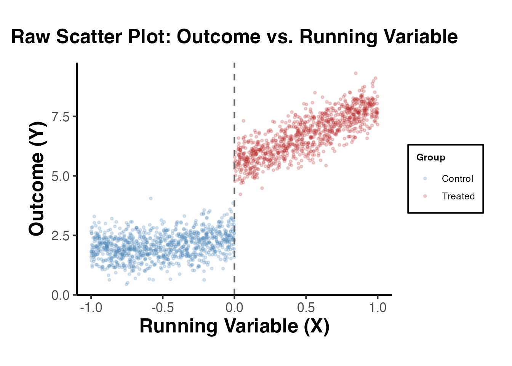
3.2 Binned Scatter Plot
With many observations, a binned scatter plot is more informative. We divide the running variable into equal-width bins and plot the mean outcome within each bin.
n_bins <- 30
binned_data <- rd_data |>
mutate(
bin = cut(x, breaks = n_bins, labels = FALSE),
side = ifelse(x >= 0, "Treated", "Control")
) |>
group_by(bin, side) |>
dplyr::summarise(
x_mean = mean(x),
y_mean = mean(y),
y_se = sd(y) / sqrt(n()),
.groups = "drop"
)
ggplot(binned_data, aes(x = x_mean, y = y_mean, color = side)) +
geom_point(size = 2.5) +
geom_errorbar(
aes(ymin = y_mean - 1.96 * y_se, ymax = y_mean + 1.96 * y_se),
width = 0.02, alpha = 0.5
) +
geom_vline(xintercept = 0, linetype = "dashed", color = "grey40") +
scale_color_manual(values = c("Control" = "steelblue", "Treated" = "firebrick")) +
labs(
x = "Running Variable (Bin Means)",
y = "Outcome (Bin Means)",
color = "Group",
title = "Binned Scatter Plot with 95% CIs"
) +
causalverse::ama_theme()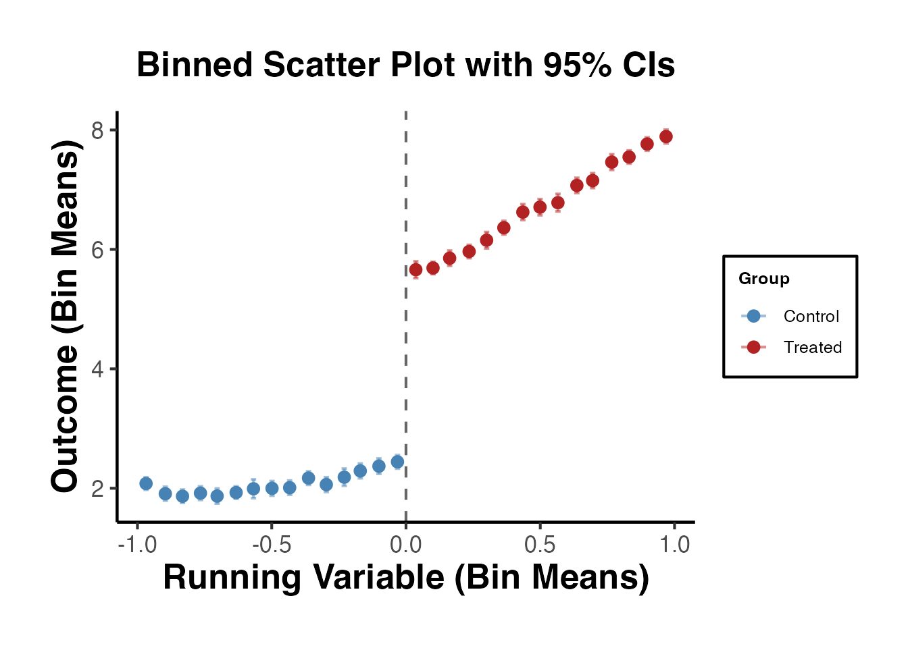
3.3 Local Polynomial Fits
We overlay local polynomial (loess) fits on each side of the cutoff. The gap between the two fitted curves at the cutoff is a visual estimate of the treatment effect.
ggplot(rd_data, aes(x = x, y = y, color = factor(treated))) +
geom_point(alpha = 0.15, size = 0.6) +
geom_smooth(
method = "loess", span = 0.5, se = TRUE, linewidth = 1.2
) +
geom_vline(xintercept = 0, linetype = "dashed", color = "grey40") +
scale_color_manual(
values = c("0" = "steelblue", "1" = "firebrick"),
labels = c("Control", "Treated")
) +
labs(
x = "Running Variable (X)",
y = "Outcome (Y)",
color = "Group",
title = "Local Polynomial Fits on Each Side of the Cutoff"
) +
causalverse::ama_theme()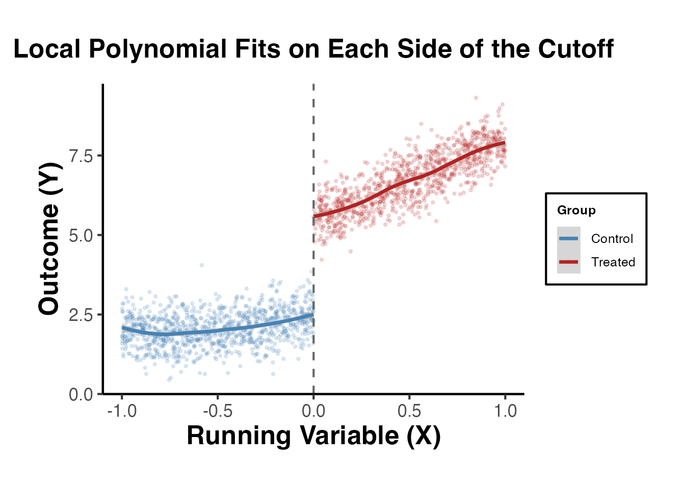
3.4 Linear Fits with Varying Bandwidths
It is useful to see how the visual discontinuity changes with the bandwidth around the cutoff.
bw_list <- c(0.25, 0.5, 0.75, 1.0)
bw_plot_data <- lapply(bw_list, function(h) {
rd_data |>
filter(abs(x) <= h) |>
mutate(bandwidth = paste0("h = ", h))
}) |>
bind_rows()
ggplot(bw_plot_data, aes(x = x, y = y, color = factor(treated))) +
geom_point(alpha = 0.2, size = 0.6) +
geom_smooth(method = "lm", se = TRUE) +
geom_vline(xintercept = 0, linetype = "dashed", color = "grey40") +
facet_wrap(~bandwidth, scales = "free") +
scale_color_manual(
values = c("0" = "steelblue", "1" = "firebrick"),
labels = c("Control", "Treated")
) +
labs(
x = "Running Variable",
y = "Outcome",
color = "Group",
title = "Linear Fits at Different Bandwidths"
) +
causalverse::ama_theme()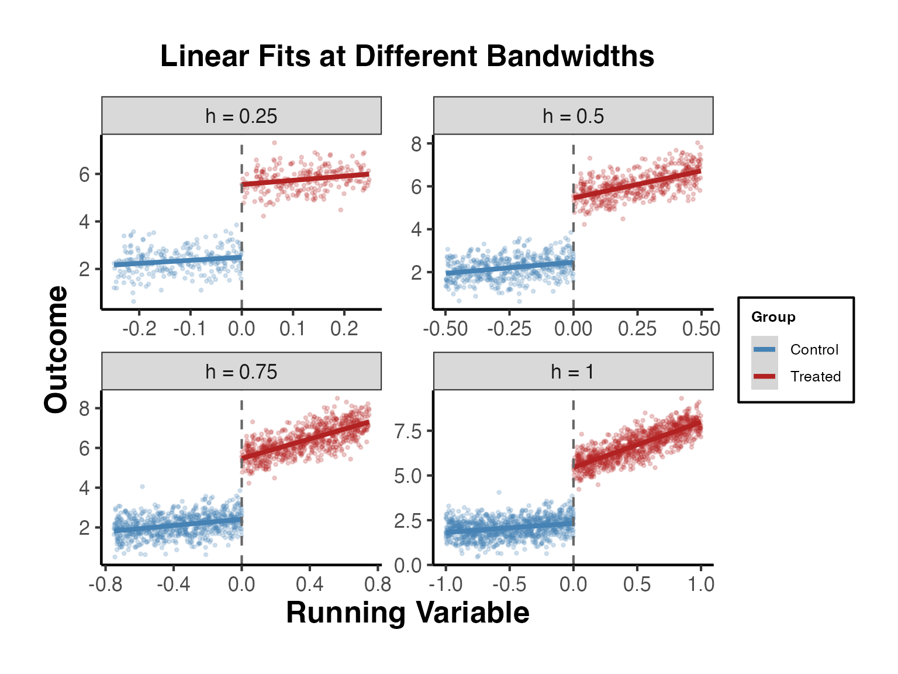
4. The rdrobust Package (Calonico, Cattaneo, Titiunik 2014)
The rdrobust package is the gold standard for RD estimation in applied research. It implements:
- MSE-optimal bandwidth selection (Imbens and Kalyanaraman, 2012; Calonico, Cattaneo, and Titiunik, 2014)
- Bias-corrected local polynomial estimators
- Robust confidence intervals that account for bandwidth selection
- RD-specific plotting routines
The key insight is that conventional confidence intervals based on the MSE-optimal bandwidth are invalid because they do not account for the smoothing bias inherent in nonparametric estimation. The rdrobust package corrects for this bias and constructs valid confidence intervals.
4.1 Basic Estimation with rdrobust()
The main function rdrobust() estimates the RD treatment effect using local polynomial regression with optimal bandwidth selection.
library(rdrobust)
# Basic RD estimation with default settings
# - Local linear regression (p = 1)
# - Triangular kernel
# - MSE-optimal bandwidth
rd_est <- rdrobust(y = rd_data$y, x = rd_data$x, c = 0)
summary(rd_est)
#> Sharp RD estimates using local polynomial regression.
#>
#> Number of Obs. 2000
#> BW type mserd
#> Kernel Triangular
#> VCE method NN
#>
#> Number of Obs. 1023 977
#> Eff. Number of Obs. 281 264
#> Order est. (p) 1 1
#> Order bias (q) 2 2
#> BW est. (h) 0.281 0.281
#> BW bias (b) 0.416 0.416
#> rho (h/b) 0.675 0.675
#> Unique Obs. 1023 977
#>
#> =====================================================================
#> Point Robust Inference
#> Estimate z P>|z| [ 95% C.I. ]
#> ---------------------------------------------------------------------
#> RD Effect 3.062 27.830 0.000 [2.855 , 3.288]
#> =====================================================================The output reports:
- Conventional: the point estimate and confidence interval using the MSE-optimal bandwidth
- Bias-corrected: the point estimate after explicit bias correction
- Robust: the recommended confidence interval that accounts for both bias correction and bandwidth selection
Always report the robust confidence interval. The conventional CI is known to have poor coverage properties.
4.2 RD Plots with rdplot()
The rdplot() function creates publication-quality RD plots with evenly-spaced or quantile-spaced bins and fitted polynomials on each side of the cutoff.
# Default RD plot: evenly-spaced bins with 4th-order polynomial
rdplot(
y = rd_data$y,
x = rd_data$x,
c = 0,
title = "RD Plot (rdplot)",
x.label = "Running Variable",
y.label = "Outcome"
)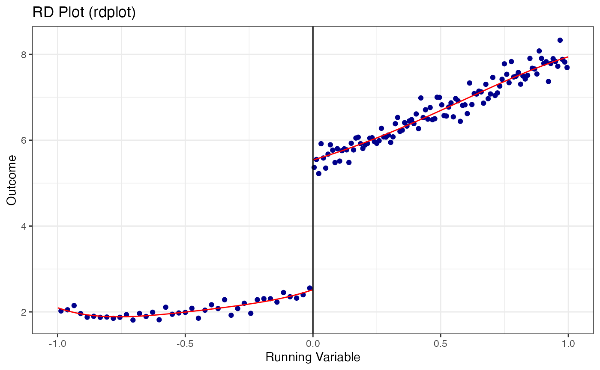
# Quantile-spaced bins (equal number of observations per bin)
rdplot(
y = rd_data$y,
x = rd_data$x,
c = 0,
binselect = "qs",
title = "RD Plot: Quantile-Spaced Bins",
x.label = "Running Variable",
y.label = "Outcome"
)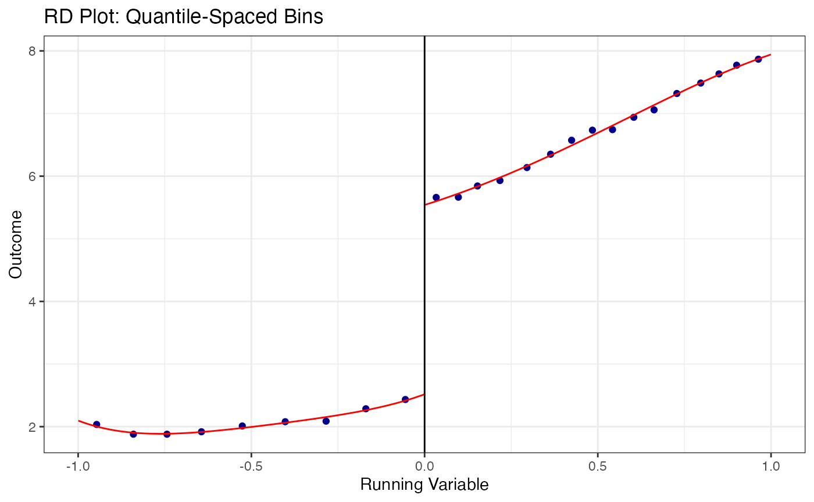
# Evenly-spaced bins with mimicking variance (IMSE-optimal)
rdplot(
y = rd_data$y,
x = rd_data$x,
c = 0,
binselect = "esmv",
title = "RD Plot: IMSE-Optimal Bins",
x.label = "Running Variable",
y.label = "Outcome"
)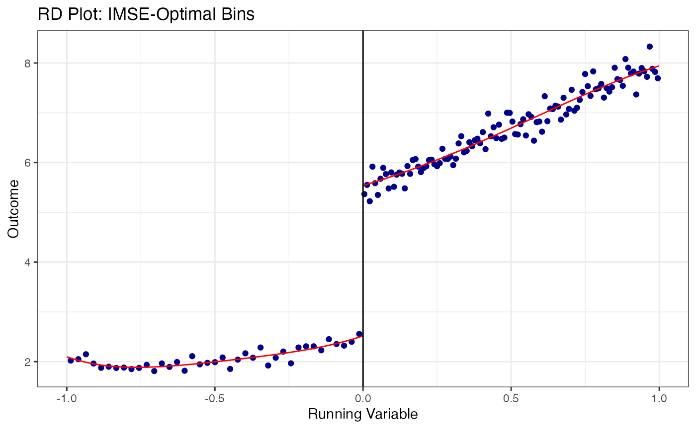
4.3 Bandwidth Sensitivity Analysis
A crucial robustness check is to show how the RD estimate changes with the bandwidth. The estimate should be relatively stable across a range of bandwidths around the optimal one.
# Get the MSE-optimal bandwidth first
rd_opt <- rdrobust(y = rd_data$y, x = rd_data$x, c = 0)
h_opt <- rd_opt$bws[1, 1] # MSE-optimal bandwidth
cat("MSE-optimal bandwidth:", round(h_opt, 3), "\n")
#> MSE-optimal bandwidth: 0.281
# Estimate at a grid of bandwidths
bw_grid <- seq(0.5 * h_opt, 2 * h_opt, length.out = 10)
bw_sensitivity <- lapply(bw_grid, function(h) {
est <- rdrobust(y = rd_data$y, x = rd_data$x, c = 0, h = h)
tibble(
bandwidth = h,
estimate = est$coef["Conventional", ],
ci_lower = est$ci["Robust", 1],
ci_upper = est$ci["Robust", 2],
n_eff_l = est$N_h[1],
n_eff_r = est$N_h[2]
)
}) |>
bind_rows()
# Plot bandwidth sensitivity
ggplot(bw_sensitivity, aes(x = bandwidth, y = estimate)) +
geom_point(size = 2) +
geom_errorbar(aes(ymin = ci_lower, ymax = ci_upper), width = 0.01) +
geom_vline(xintercept = h_opt, linetype = "dashed", color = "blue",
linewidth = 0.8) +
geom_hline(yintercept = 3, linetype = "dotted", color = "red") +
annotate("text", x = h_opt, y = max(bw_sensitivity$ci_upper) + 0.2,
label = "MSE-optimal h", color = "blue", hjust = -0.1) +
labs(
x = "Bandwidth",
y = "RD Estimate (Robust CIs)",
title = "Bandwidth Sensitivity of the RD Estimate"
) +
causalverse::ama_theme()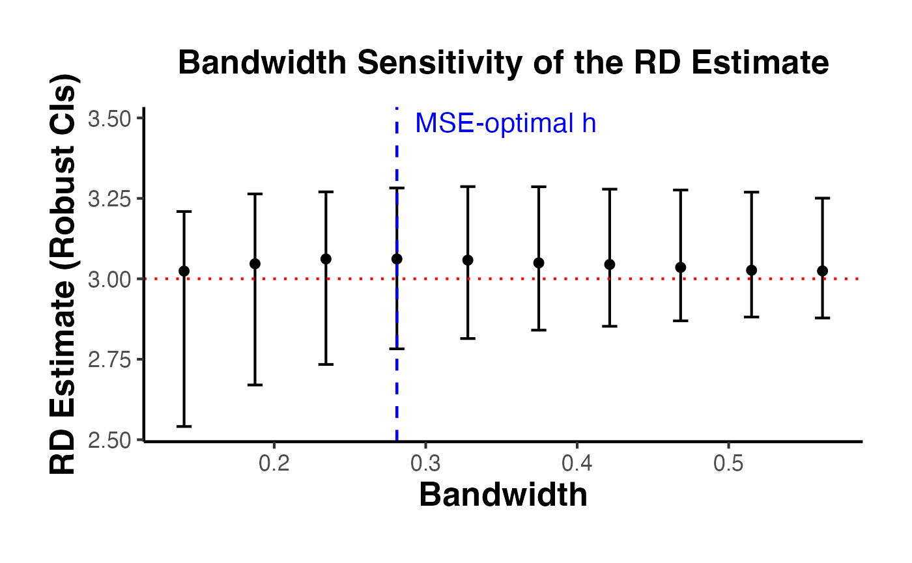
4.4 Different Kernel Choices
The kernel function weights observations by their distance from the cutoff. rdrobust supports three kernels:
- Triangular (default): . Places most weight on observations closest to the cutoff.
- Epanechnikov: . Similar to triangular but smoother.
- Uniform: . Equal weight to all observations within the bandwidth.
kernels <- c("triangular", "epanechnikov", "uniform")
kernel_results <- lapply(kernels, function(k) {
est <- rdrobust(y = rd_data$y, x = rd_data$x, c = 0, kernel = k)
tibble(
kernel = k,
estimate = est$coef["Conventional", ],
robust_ci_lower = est$ci["Robust", 1],
robust_ci_upper = est$ci["Robust", 2],
bandwidth = est$bws[1, 1]
)
}) |>
bind_rows()
kernel_results
#> # A tibble: 3 × 5
#> kernel estimate robust_ci_lower robust_ci_upper bandwidth
#> <chr> <dbl> <dbl> <dbl> <dbl>
#> 1 triangular 3.06 2.86 3.29 0.281
#> 2 epanechnikov 3.07 2.86 3.30 0.256
#> 3 uniform 3.06 2.87 3.27 0.271
# Plot kernel comparison
ggplot(kernel_results, aes(x = kernel, y = estimate)) +
geom_point(size = 3) +
geom_errorbar(
aes(ymin = robust_ci_lower, ymax = robust_ci_upper),
width = 0.15
) +
geom_hline(yintercept = 3, linetype = "dashed", color = "red") +
labs(
x = "Kernel Function",
y = "RD Estimate",
title = "RD Estimates by Kernel Choice"
) +
causalverse::ama_theme()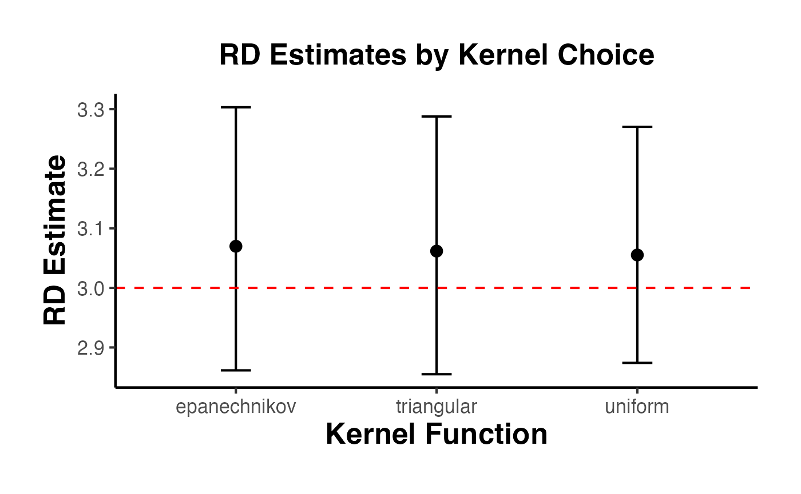
4.5 Different Polynomial Orders
The polynomial order controls the flexibility of the local polynomial fit. The most common choices are:
- : Local constant (Nadaraya-Watson)
-
: Local linear (default in
rdrobust, recommended in most cases) - : Local quadratic
Higher-order polynomials reduce bias but increase variance. Calonico, Cattaneo, and Titiunik (2014) recommend as the default.
poly_orders <- 0:3
poly_results <- lapply(poly_orders, function(p) {
est <- rdrobust(y = rd_data$y, x = rd_data$x, c = 0, p = p)
tibble(
poly_order = p,
estimate = est$coef["Conventional", ],
robust_ci_lower = est$ci["Robust", 1],
robust_ci_upper = est$ci["Robust", 2],
bandwidth = est$bws[1, 1]
)
}) |>
bind_rows()
poly_results
#> # A tibble: 4 × 5
#> poly_order estimate robust_ci_lower robust_ci_upper bandwidth
#> <int> <dbl> <dbl> <dbl> <dbl>
#> 1 0 3.09 2.81 3.21 0.0668
#> 2 1 3.06 2.86 3.29 0.281
#> 3 2 3.07 2.85 3.32 0.451
#> 4 3 3.03 2.71 3.29 0.427
ggplot(poly_results, aes(x = factor(poly_order), y = estimate)) +
geom_point(size = 3) +
geom_errorbar(
aes(ymin = robust_ci_lower, ymax = robust_ci_upper),
width = 0.15
) +
geom_hline(yintercept = 3, linetype = "dashed", color = "red") +
labs(
x = "Polynomial Order (p)",
y = "RD Estimate",
title = "RD Estimates by Polynomial Order"
) +
causalverse::ama_theme()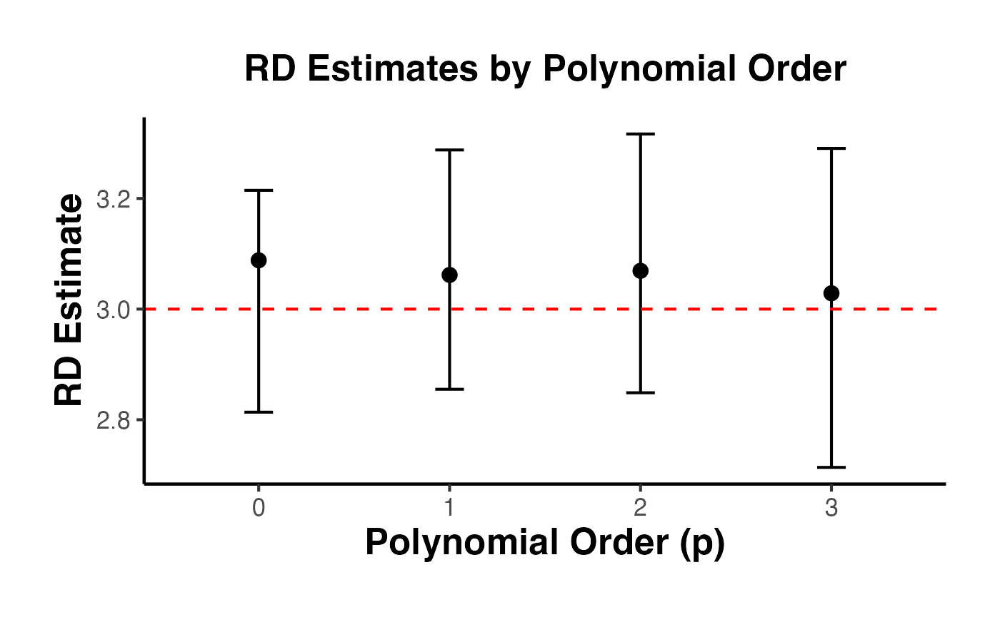
4.6 Including Covariates in rdrobust
Pre-determined covariates can be included in the RD estimation to improve precision. Covariates that predict the outcome reduce residual variance and narrow confidence intervals. Importantly, the point estimate should not change substantially when covariates are included (if it does, this suggests a problem with the design).
# Prepare covariate matrix
covs <- as.matrix(rd_data[, c("age", "female", "education", "income")])
# Estimation without covariates
rd_no_covs <- rdrobust(y = rd_data$y, x = rd_data$x, c = 0)
# Estimation with covariates
rd_with_covs <- rdrobust(y = rd_data$y, x = rd_data$x, c = 0, covs = covs)
cat("=== Without Covariates ===\n")
#> === Without Covariates ===
cat("Estimate:", round(rd_no_covs$coef["Conventional", ], 3), "\n")
#> Estimate: 3.062
cat("Robust CI: [", round(rd_no_covs$ci["Robust", 1], 3), ",",
round(rd_no_covs$ci["Robust", 2], 3), "]\n\n")
#> Robust CI: [ 2.855 , 3.288 ]
cat("=== With Covariates ===\n")
#> === With Covariates ===
cat("Estimate:", round(rd_with_covs$coef["Conventional", ], 3), "\n")
#> Estimate: 3.078
cat("Robust CI: [", round(rd_with_covs$ci["Robust", 1], 3), ",",
round(rd_with_covs$ci["Robust", 2], 3), "]\n")
#> Robust CI: [ 2.875 , 3.3 ]4.7 Clustered Standard Errors
When the running variable takes on discrete values (e.g., test scores with integer values) or when there are groups of related observations (e.g., students within schools), clustered standard errors may be needed. The cluster argument in rdrobust implements this.
# Add a cluster variable (e.g., school ID)
rd_data_clustered <- rd_data |>
mutate(school_id = sample(1:50, n(), replace = TRUE))
# Estimation with clustered standard errors
rd_clustered <- rdrobust(
y = rd_data_clustered$y,
x = rd_data_clustered$x,
c = 0,
cluster = rd_data_clustered$school_id
)
summary(rd_clustered)
#> Sharp RD estimates using local polynomial regression.
#>
#> Number of Obs. 2000
#> BW type mserd
#> Kernel Triangular
#> VCE method NN
#>
#> Number of Obs. 1023 977
#> Eff. Number of Obs. 272 258
#> Order est. (p) 1 1
#> Order bias (q) 2 2
#> BW est. (h) 0.273 0.273
#> BW bias (b) 0.396 0.396
#> rho (h/b) 0.689 0.689
#> Unique Obs. 1023 977
#>
#> =====================================================================
#> Point Robust Inference
#> Estimate z P>|z| [ 95% C.I. ]
#> ---------------------------------------------------------------------
#> RD Effect 3.062 26.239 0.000 [2.841 , 3.300]
#> =====================================================================4.8 Additional rdrobust Options
# Using CER-optimal bandwidth (coverage error rate optimal)
# Narrower than MSE-optimal; better coverage properties
rd_cer <- rdrobust(y = rd_data$y, x = rd_data$x, c = 0, bwselect = "cerrd")
summary(rd_cer)
#> Sharp RD estimates using local polynomial regression.
#>
#> Number of Obs. 2000
#> BW type cerrd
#> Kernel Triangular
#> VCE method NN
#>
#> Number of Obs. 1023 977
#> Eff. Number of Obs. 180 191
#> Order est. (p) 1 1
#> Order bias (q) 2 2
#> BW est. (h) 0.192 0.192
#> BW bias (b) 0.416 0.416
#> rho (h/b) 0.462 0.462
#> Unique Obs. 1023 977
#>
#> =====================================================================
#> Point Robust Inference
#> Estimate z P>|z| [ 95% C.I. ]
#> ---------------------------------------------------------------------
#> RD Effect 3.047 25.976 0.000 [2.822 , 3.282]
#> =====================================================================
# Specifying different bandwidths on each side
rd_asym <- rdrobust(
y = rd_data$y,
x = rd_data$x,
c = 0,
h = c(0.4, 0.6) # left bandwidth = 0.4, right bandwidth = 0.6
)
summary(rd_asym)
#> Sharp RD estimates using local polynomial regression.
#>
#> Number of Obs. 2000
#> BW type Manual
#> Kernel Triangular
#> VCE method NN
#>
#> Number of Obs. 1023 977
#> Eff. Number of Obs. 395 576
#> Order est. (p) 1 1
#> Order bias (q) 2 2
#> BW est. (h) 0.400 0.600
#> BW bias (b) 0.400 0.600
#> rho (h/b) 1.000 1.000
#> Unique Obs. 1023 977
#>
#> =====================================================================
#> Point Robust Inference
#> Estimate z P>|z| [ 95% C.I. ]
#> ---------------------------------------------------------------------
#> RD Effect 3.003 29.719 0.000 [2.850 , 3.253]
#> =====================================================================
# Using a different bias bandwidth (b) relative to main bandwidth (h)
rd_rho <- rdrobust(y = rd_data$y, x = rd_data$x, c = 0, rho = 0.8)
summary(rd_rho)
#> Sharp RD estimates using local polynomial regression.
#>
#> Number of Obs. 2000
#> BW type mserd
#> Kernel Triangular
#> VCE method NN
#>
#> Number of Obs. 1023 977
#> Eff. Number of Obs. 281 264
#> Order est. (p) 1 1
#> Order bias (q) 2 2
#> BW est. (h) 0.281 0.281
#> BW bias (b) 0.351 0.351
#> rho (h/b) 0.800 0.800
#> Unique Obs. 1023 977
#>
#> =====================================================================
#> Point Robust Inference
#> Estimate z P>|z| [ 95% C.I. ]
#> ---------------------------------------------------------------------
#> RD Effect 3.062 26.364 0.000 [2.840 , 3.296]
#> =====================================================================
# All available bandwidth selectors
bw_selectors <- c("mserd", "msetwo", "msesum", "msecomb1", "msecomb2",
"cerrd", "certwo", "cersum", "cercomb1", "cercomb2")
bw_comparison <- lapply(bw_selectors, function(bw) {
est <- tryCatch(
rdrobust(y = rd_data$y, x = rd_data$x, c = 0, bwselect = bw),
error = function(e) NULL
)
if (!is.null(est)) {
tibble(
selector = bw,
h_left = est$bws[1, 1],
h_right = est$bws[1, 2],
estimate = est$coef["Conventional", ],
robust_ci = paste0("[", round(est$ci["Robust", 1], 3), ", ",
round(est$ci["Robust", 2], 3), "]")
)
}
}) |>
bind_rows()
bw_comparison
#> # A tibble: 10 × 5
#> selector h_left h_right estimate robust_ci
#> <chr> <dbl> <dbl> <dbl> <chr>
#> 1 mserd 0.281 0.281 3.06 [2.855, 3.288]
#> 2 msetwo 0.331 0.254 3.06 [2.852, 3.273]
#> 3 msesum 0.331 0.331 3.06 [2.878, 3.258]
#> 4 msecomb1 0.281 0.281 3.06 [2.855, 3.288]
#> 5 msecomb2 0.331 0.281 3.06 [2.859, 3.275]
#> 6 cerrd 0.192 0.192 3.05 [2.822, 3.282]
#> 7 certwo 0.226 0.174 3.07 [2.848, 3.293]
#> 8 cersum 0.227 0.227 3.06 [2.855, 3.274]
#> 9 cercomb1 0.192 0.192 3.05 [2.822, 3.282]
#> 10 cercomb2 0.226 0.192 3.06 [2.846, 3.287]5. The rddensity Package (Cattaneo, Jansson, Ma 2020)
The rddensity package implements formal tests for manipulation of the running variable. The test examines whether the density of the running variable is continuous at the cutoff. A discontinuity in the density is evidence that units are sorting (bunching) around the cutoff, which would violate the no-manipulation assumption.
The test is based on local polynomial density estimation. It is a refinement of the earlier McCrary (2008) test, using bias-corrected inference and robust confidence intervals analogous to rdrobust.
5.1 Histogram Check
Before running a formal test, a histogram provides a visual check:
ggplot(rd_data, aes(x = x)) +
geom_histogram(
bins = 50, fill = "steelblue", color = "white", alpha = 0.8
) +
geom_vline(xintercept = 0, linetype = "dashed", color = "red", linewidth = 1) +
labs(
x = "Running Variable",
y = "Count",
title = "Density of the Running Variable Around the Cutoff"
) +
causalverse::ama_theme()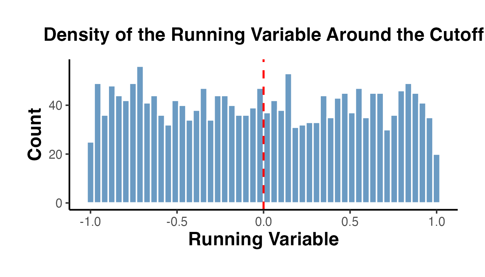
Since our running variable is drawn from a uniform distribution, we observe no bunching. In real applications, the formal test is essential.
5.2 Formal Density Test with rddensity()
library(rddensity)
# Basic manipulation test
density_test <- rddensity(X = rd_data$x, c = 0)
summary(density_test)
#>
#> Manipulation testing using local polynomial density estimation.
#>
#> Number of obs = 2000
#> Model = unrestricted
#> Kernel = triangular
#> BW method = estimated
#> VCE method = jackknife
#>
#> c = 0 Left of c Right of c
#> Number of obs 1023 977
#> Eff. Number of obs 411 285
#> Order est. (p) 2 2
#> Order bias (q) 3 3
#> BW est. (h) 0.416 0.308
#>
#> Method T P > |T|
#> Robust -0.508 0.6114
#>
#>
#> P-values of binomial tests (H0: p=0.5).
#>
#> Window Length / 2 <c >=c P>|T|
#> 0.030 34 20 0.0759
#> 0.060 70 51 0.1014
#> 0.090 94 86 0.6020
#> 0.119 119 112 0.6931
#> 0.149 141 151 0.5985
#> 0.179 169 184 0.4562
#> 0.209 201 205 0.8817
#> 0.239 237 230 0.7813
#> 0.269 267 254 0.5991
#> 0.298 299 276 0.3589The output reports:
- The estimated density on the left and right of the cutoff
- The T-statistic and p-value for the null hypothesis of continuity
- Both conventional and robust p-values
A large p-value (e.g., > 0.05) is consistent with no manipulation. A small p-value indicates evidence of manipulation.
5.3 Density Plots with rdplotdensity()
# Density plot with confidence intervals
# density_test is created in the rddensity-test chunk above
rdplotdensity(
rdd = density_test,
X = rd_data$x,
title = "Density Continuity Test at the Cutoff",
xlabel = "Running Variable",
ylabel = "Density"
)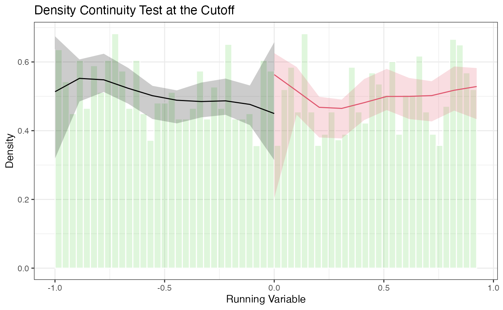
#> $Estl
#> Call: lpdensity
#>
#> Sample size 1023
#> Polynomial order for point estimation (p=) 2
#> Order of derivative estimated (v=) 1
#> Polynomial order for confidence interval (q=) 3
#> Kernel function triangular
#> Scaling factor 0.51175587793897
#> Bandwidth method user provided
#>
#> Use summary(...) to show estimates.
#>
#> $Estr
#> Call: lpdensity
#>
#> Sample size 977
#> Polynomial order for point estimation (p=) 2
#> Order of derivative estimated (v=) 1
#> Polynomial order for confidence interval (q=) 3
#> Kernel function triangular
#> Scaling factor 0.488744372186093
#> Bandwidth method user provided
#>
#> Use summary(...) to show estimates.
#>
#> $Estplot
The plot shows the estimated density on each side of the cutoff with pointwise confidence intervals. Overlapping confidence intervals at the cutoff are consistent with no manipulation.
5.4 Advanced Options for rddensity
# Different polynomial orders for the density estimator
density_p2 <- rddensity(X = rd_data$x, c = 0, p = 2)
summary(density_p2)
#>
#> Manipulation testing using local polynomial density estimation.
#>
#> Number of obs = 2000
#> Model = unrestricted
#> Kernel = triangular
#> BW method = estimated
#> VCE method = jackknife
#>
#> c = 0 Left of c Right of c
#> Number of obs 1023 977
#> Eff. Number of obs 411 285
#> Order est. (p) 2 2
#> Order bias (q) 3 3
#> BW est. (h) 0.416 0.308
#>
#> Method T P > |T|
#> Robust -0.508 0.6114
#>
#>
#> P-values of binomial tests (H0: p=0.5).
#>
#> Window Length / 2 <c >=c P>|T|
#> 0.030 34 20 0.0759
#> 0.060 70 51 0.1014
#> 0.090 94 86 0.6020
#> 0.119 119 112 0.6931
#> 0.149 141 151 0.5985
#> 0.179 169 184 0.4562
#> 0.209 201 205 0.8817
#> 0.239 237 230 0.7813
#> 0.269 267 254 0.5991
#> 0.298 299 276 0.3589
# Specifying bandwidths manually
density_manual_bw <- rddensity(X = rd_data$x, c = 0, h = c(0.3, 0.3))
summary(density_manual_bw)
#>
#> Manipulation testing using local polynomial density estimation.
#>
#> Number of obs = 2000
#> Model = unrestricted
#> Kernel = triangular
#> BW method = mannual
#> VCE method = jackknife
#>
#> c = 0 Left of c Right of c
#> Number of obs 1023 977
#> Eff. Number of obs 300 278
#> Order est. (p) 2 2
#> Order bias (q) 3 3
#> BW est. (h) 0.3 0.3
#>
#> Method T P > |T|
#> Robust -1.2975 0.1945
#>
#>
#> P-values of binomial tests (H0: p=0.5).
#>
#> Window Length / 2 <c >=c P>|T|
#> 0.030 34 20 0.0759
#> 0.060 70 51 0.1014
#> 0.090 94 86 0.6020
#> 0.119 119 112 0.6931
#> 0.149 141 151 0.5985
#> 0.179 169 184 0.4562
#> 0.209 201 205 0.8817
#> 0.239 237 230 0.7813
#> 0.269 267 254 0.5991
#> 0.298 299 276 0.3589
# Using different kernel
density_uni <- rddensity(X = rd_data$x, c = 0, kernel = "uniform")
summary(density_uni)
#>
#> Manipulation testing using local polynomial density estimation.
#>
#> Number of obs = 2000
#> Model = unrestricted
#> Kernel = uniform
#> BW method = estimated
#> VCE method = jackknife
#>
#> c = 0 Left of c Right of c
#> Number of obs 1023 977
#> Eff. Number of obs 399 311
#> Order est. (p) 2 2
#> Order bias (q) 3 3
#> BW est. (h) 0.402 0.341
#>
#> Method T P > |T|
#> Robust 0.6521 0.5144
#>
#>
#> P-values of binomial tests (H0: p=0.5).
#>
#> Window Length / 2 <c >=c P>|T|
#> 0.030 34 20 0.0759
#> 0.060 70 51 0.1014
#> 0.090 94 86 0.6020
#> 0.119 119 112 0.6931
#> 0.149 141 151 0.5985
#> 0.179 169 184 0.4562
#> 0.209 201 205 0.8817
#> 0.239 237 230 0.7813
#> 0.269 267 254 0.5991
#> 0.298 299 276 0.3589
# Binomial test (useful with discrete running variables)
# When the running variable is discrete, the density test may not apply directly.
# A binomial test checks whether the share of observations just above the cutoff
# is consistent with random assignment.
n_just_below <- sum(rd_data$x >= -0.05 & rd_data$x < 0)
n_just_above <- sum(rd_data$x >= 0 & rd_data$x < 0.05)
binom.test(n_just_above, n_just_below + n_just_above, p = 0.5)
#>
#> Exact binomial test
#>
#> data: n_just_above and n_just_below + n_just_above
#> number of successes = 47, number of trials = 105, p-value = 0.3291
#> alternative hypothesis: true probability of success is not equal to 0.5
#> 95 percent confidence interval:
#> 0.3504736 0.5477955
#> sample estimates:
#> probability of success
#> 0.4476196. The rdpower Package (Cattaneo, Titiunik, Vazquez-Bare 2019)
The rdpower package provides tools for power calculations and sample size determination in RD designs. Power analysis is critical for planning new studies and for assessing whether existing studies had adequate power to detect effects of a given size.
6.1 Power Calculations with rdpower()
Given data (or summary statistics) and a hypothesized effect size, rdpower() computes the power of the RD test.
library(rdpower)
# Power calculation using the data directly
# tau = 3 is the hypothesized treatment effect
power_result <- rdpower(
data = data.frame(y = rd_data$y, x = rd_data$x),
cutoff = 0,
tau = 3
)
#>
#> Number of obs = 2000
#> BW type = mserd
#> Kernel type = Triangular
#> VCE method = NN
#> Derivative = 0
#> HA: tau = 3
#>
#>
#> Cutoff c = 0 Left of c Right of c
#> Number of obs 1023 977
#> Eff. number of obs 281 264
#> BW loc. poly. 0.281 0.281
#> Order loc. poly. 1 1
#> Sampling BW 0.281 0.281
#> New sample 281 264
#>
#>
#> =========================================================================================
#> Power against: H0: tau = 0.2*tau = 0.5*tau = 0.8*tau = tau =
#> 0 0.6 1.5 2.4 3
#> -----------------------------------------------------------------------------------------
#> Robust bias-corrected 0.05 1 1 1 1
#> =========================================================================================
print(power_result)
#> $power.rbc
#> [1] 1
#>
#> $se.rbc
#> [1] 0.1103627
#>
#> $sampsi.r
#> [1] 264
#>
#> $sampsi.l
#> [1] 281
#>
#> $samph.r
#> [1] 0.2809692
#>
#> $samph.l
#> [1] 0.2809692
#>
#> $N.r
#> [1] 977
#>
#> $N.l
#> [1] 1023
#>
#> $Nh.l
#> [1] 281
#>
#> $Nh.r
#> [1] 264
#>
#> $tau
#> [1] 3
#>
#> $bias.r
#> [1] -0.2511478
#>
#> $bias.l
#> [1] -0.1288031
#>
#> $Vr.rb
#> [1] 3.238033
#>
#> $Vl.rb
#> [1] 3.606328
#>
#> $alpha
#> [1] 0.056.2 Power for Different Effect Sizes
# How does power change with the effect size?
effect_sizes <- seq(0.5, 5, by = 0.5)
power_by_tau <- lapply(effect_sizes, function(tau) {
pw <- rdpower(
data = data.frame(y = rd_data$y, x = rd_data$x),
cutoff = 0,
tau = tau
)
tibble(
tau = tau,
power = pw$power
)
}) |>
bind_rows()
#>
#> Number of obs = 2000
#> BW type = mserd
#> Kernel type = Triangular
#> VCE method = NN
#> Derivative = 0
#> HA: tau = 0.5
#>
#>
#> Cutoff c = 0 Left of c Right of c
#> Number of obs 1023 977
#> Eff. number of obs 281 264
#> BW loc. poly. 0.281 0.281
#> Order loc. poly. 1 1
#> Sampling BW 0.281 0.281
#> New sample 281 264
#>
#>
#> =========================================================================================
#> Power against: H0: tau = 0.2*tau = 0.5*tau = 0.8*tau = tau =
#> 0 0.1 0.25 0.4 0.5
#> -----------------------------------------------------------------------------------------
#> Robust bias-corrected 0.05 0.148 0.62 0.952 0.995
#> =========================================================================================
#>
#>
#> Number of obs = 2000
#> BW type = mserd
#> Kernel type = Triangular
#> VCE method = NN
#> Derivative = 0
#> HA: tau = 1
#>
#>
#> Cutoff c = 0 Left of c Right of c
#> Number of obs 1023 977
#> Eff. number of obs 281 264
#> BW loc. poly. 0.281 0.281
#> Order loc. poly. 1 1
#> Sampling BW 0.281 0.281
#> New sample 281 264
#>
#>
#> =========================================================================================
#> Power against: H0: tau = 0.2*tau = 0.5*tau = 0.8*tau = tau =
#> 0 0.2 0.5 0.8 1
#> -----------------------------------------------------------------------------------------
#> Robust bias-corrected 0.05 0.441 0.995 1 1
#> =========================================================================================
#>
#>
#> Number of obs = 2000
#> BW type = mserd
#> Kernel type = Triangular
#> VCE method = NN
#> Derivative = 0
#> HA: tau = 1.5
#>
#>
#> Cutoff c = 0 Left of c Right of c
#> Number of obs 1023 977
#> Eff. number of obs 281 264
#> BW loc. poly. 0.281 0.281
#> Order loc. poly. 1 1
#> Sampling BW 0.281 0.281
#> New sample 281 264
#>
#>
#> =========================================================================================
#> Power against: H0: tau = 0.2*tau = 0.5*tau = 0.8*tau = tau =
#> 0 0.3 0.75 1.2 1.5
#> -----------------------------------------------------------------------------------------
#> Robust bias-corrected 0.05 0.776 1 1 1
#> =========================================================================================
#>
#>
#> Number of obs = 2000
#> BW type = mserd
#> Kernel type = Triangular
#> VCE method = NN
#> Derivative = 0
#> HA: tau = 2
#>
#>
#> Cutoff c = 0 Left of c Right of c
#> Number of obs 1023 977
#> Eff. number of obs 281 264
#> BW loc. poly. 0.281 0.281
#> Order loc. poly. 1 1
#> Sampling BW 0.281 0.281
#> New sample 281 264
#>
#>
#> =========================================================================================
#> Power against: H0: tau = 0.2*tau = 0.5*tau = 0.8*tau = tau =
#> 0 0.4 1 1.6 2
#> -----------------------------------------------------------------------------------------
#> Robust bias-corrected 0.05 0.952 1 1 1
#> =========================================================================================
#>
#>
#> Number of obs = 2000
#> BW type = mserd
#> Kernel type = Triangular
#> VCE method = NN
#> Derivative = 0
#> HA: tau = 2.5
#>
#>
#> Cutoff c = 0 Left of c Right of c
#> Number of obs 1023 977
#> Eff. number of obs 281 264
#> BW loc. poly. 0.281 0.281
#> Order loc. poly. 1 1
#> Sampling BW 0.281 0.281
#> New sample 281 264
#>
#>
#> =========================================================================================
#> Power against: H0: tau = 0.2*tau = 0.5*tau = 0.8*tau = tau =
#> 0 0.5 1.25 2 2.5
#> -----------------------------------------------------------------------------------------
#> Robust bias-corrected 0.05 0.995 1 1 1
#> =========================================================================================
#>
#>
#> Number of obs = 2000
#> BW type = mserd
#> Kernel type = Triangular
#> VCE method = NN
#> Derivative = 0
#> HA: tau = 3
#>
#>
#> Cutoff c = 0 Left of c Right of c
#> Number of obs 1023 977
#> Eff. number of obs 281 264
#> BW loc. poly. 0.281 0.281
#> Order loc. poly. 1 1
#> Sampling BW 0.281 0.281
#> New sample 281 264
#>
#>
#> =========================================================================================
#> Power against: H0: tau = 0.2*tau = 0.5*tau = 0.8*tau = tau =
#> 0 0.6 1.5 2.4 3
#> -----------------------------------------------------------------------------------------
#> Robust bias-corrected 0.05 1 1 1 1
#> =========================================================================================
#>
#>
#> Number of obs = 2000
#> BW type = mserd
#> Kernel type = Triangular
#> VCE method = NN
#> Derivative = 0
#> HA: tau = 3.5
#>
#>
#> Cutoff c = 0 Left of c Right of c
#> Number of obs 1023 977
#> Eff. number of obs 281 264
#> BW loc. poly. 0.281 0.281
#> Order loc. poly. 1 1
#> Sampling BW 0.281 0.281
#> New sample 281 264
#>
#>
#> =========================================================================================
#> Power against: H0: tau = 0.2*tau = 0.5*tau = 0.8*tau = tau =
#> 0 0.7 1.75 2.8 3.5
#> -----------------------------------------------------------------------------------------
#> Robust bias-corrected 0.05 1 1 1 1
#> =========================================================================================
#>
#>
#> Number of obs = 2000
#> BW type = mserd
#> Kernel type = Triangular
#> VCE method = NN
#> Derivative = 0
#> HA: tau = 4
#>
#>
#> Cutoff c = 0 Left of c Right of c
#> Number of obs 1023 977
#> Eff. number of obs 281 264
#> BW loc. poly. 0.281 0.281
#> Order loc. poly. 1 1
#> Sampling BW 0.281 0.281
#> New sample 281 264
#>
#>
#> =========================================================================================
#> Power against: H0: tau = 0.2*tau = 0.5*tau = 0.8*tau = tau =
#> 0 0.8 2 3.2 4
#> -----------------------------------------------------------------------------------------
#> Robust bias-corrected 0.05 1 1 1 1
#> =========================================================================================
#>
#>
#> Number of obs = 2000
#> BW type = mserd
#> Kernel type = Triangular
#> VCE method = NN
#> Derivative = 0
#> HA: tau = 4.5
#>
#>
#> Cutoff c = 0 Left of c Right of c
#> Number of obs 1023 977
#> Eff. number of obs 281 264
#> BW loc. poly. 0.281 0.281
#> Order loc. poly. 1 1
#> Sampling BW 0.281 0.281
#> New sample 281 264
#>
#>
#> =========================================================================================
#> Power against: H0: tau = 0.2*tau = 0.5*tau = 0.8*tau = tau =
#> 0 0.9 2.25 3.6 4.5
#> -----------------------------------------------------------------------------------------
#> Robust bias-corrected 0.05 1 1 1 1
#> =========================================================================================
#>
#>
#> Number of obs = 2000
#> BW type = mserd
#> Kernel type = Triangular
#> VCE method = NN
#> Derivative = 0
#> HA: tau = 5
#>
#>
#> Cutoff c = 0 Left of c Right of c
#> Number of obs 1023 977
#> Eff. number of obs 281 264
#> BW loc. poly. 0.281 0.281
#> Order loc. poly. 1 1
#> Sampling BW 0.281 0.281
#> New sample 281 264
#>
#>
#> =========================================================================================
#> Power against: H0: tau = 0.2*tau = 0.5*tau = 0.8*tau = tau =
#> 0 1 2.5 4 5
#> -----------------------------------------------------------------------------------------
#> Robust bias-corrected 0.05 1 1 1 1
#> =========================================================================================
ggplot(power_by_tau, aes(x = tau, y = power)) +
geom_line(linewidth = 1) +
geom_point(size = 2) +
geom_hline(yintercept = 0.8, linetype = "dashed", color = "red") +
annotate("text", x = max(effect_sizes), y = 0.82, label = "80% Power",
color = "red", hjust = 1) +
labs(
x = "Hypothesized Treatment Effect (tau)",
y = "Statistical Power",
title = "Power Curve for RD Design"
) +
causalverse::ama_theme()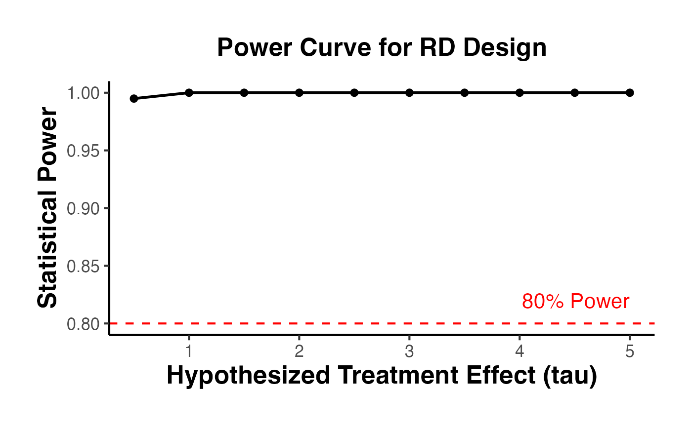
6.3 Sample Size Calculations with rdsampsi()
Given a desired power level and hypothesized effect size, rdsampsi() determines the required sample size.
# Required sample size for 80% power to detect tau = 3
sampsi_result <- rdsampsi(
data = data.frame(y = rd_data$y, x = rd_data$x),
cutoff = 0,
tau = 3
)
#> Calculating sample size...Sample size obtained.
#> Number of obs = 2000
#> BW type = mserd
#> Kernel type = Triangular
#> VCE method = NN
#> Derivative = 0
#> HA: tau = 3
#> Power = 0.8
#>
#>
#> Cutoff c = 0 Left of c Right of c
#> Number of obs 1023 977
#> Eff. number of obs 281 264
#> BW loc. poly. 0.281 0.281
#> Order loc. poly. 1 1
#> Sampling BW 0.281 0.281
#>
#>
#> =========================================================================================
#> Number of obs in window Proportion
#> [c-h,c) [c,c+h] Total [c,c+h]
#> -----------------------------------------------------------------------------------------
#> Robust bias-corrected 4 3 7 0.487
#> =========================================================================================
print(sampsi_result)
#> $sampsi.h.tot
#> [1] 7
#>
#> $sampsi.h.r
#> [1] 3
#>
#> $sampsi.h.l
#> [1] 4
#>
#> $sampsi.tot
#> [1] 22
#>
#> $N.r
#> [1] 977
#>
#> $N.l
#> [1] 1023
#>
#> $Nh.r
#> [1] 264
#>
#> $Nh.l
#> [1] 281
#>
#> $bias.r
#> [1] -0.2511478
#>
#> $bias.l
#> [1] -0.2511478
#>
#> $var.r
#> [1] 3.238033
#>
#> $var.l
#> [1] 3.606328
#>
#> $samph.r
#> [1] 0.2809692
#>
#> $samph.l
#> [1] 0.2809692
#>
#> $tau
#> [1] 3
#>
#> $beta
#> [1] 0.8
#>
#> $alpha
#> [1] 0.05
#>
#> $init.cond
#> [1] 2000
#>
#> $no.iter
#> [1] 28
# Required sample size for 80% power to detect tau = 1.5
# (smaller effect requires more data)
sampsi_small <- rdsampsi(
data = data.frame(y = rd_data$y, x = rd_data$x),
cutoff = 0,
tau = 1.5
)
#> Calculating sample size...Sample size obtained.
#> Number of obs = 2000
#> BW type = mserd
#> Kernel type = Triangular
#> VCE method = NN
#> Derivative = 0
#> HA: tau = 1.5
#> Power = 0.8
#>
#>
#> Cutoff c = 0 Left of c Right of c
#> Number of obs 1023 977
#> Eff. number of obs 281 264
#> BW loc. poly. 0.281 0.281
#> Order loc. poly. 1 1
#> Sampling BW 0.281 0.281
#>
#>
#> =========================================================================================
#> Number of obs in window Proportion
#> [c-h,c) [c,c+h] Total [c,c+h]
#> -----------------------------------------------------------------------------------------
#> Robust bias-corrected 12 12 24 0.487
#> =========================================================================================
print(sampsi_small)
#> $sampsi.h.tot
#> [1] 24
#>
#> $sampsi.h.r
#> [1] 12
#>
#> $sampsi.h.l
#> [1] 12
#>
#> $sampsi.tot
#> [1] 85
#>
#> $N.r
#> [1] 977
#>
#> $N.l
#> [1] 1023
#>
#> $Nh.r
#> [1] 264
#>
#> $Nh.l
#> [1] 281
#>
#> $bias.r
#> [1] -0.2511478
#>
#> $bias.l
#> [1] -0.2511478
#>
#> $var.r
#> [1] 3.238033
#>
#> $var.l
#> [1] 3.606328
#>
#> $samph.r
#> [1] 0.2809692
#>
#> $samph.l
#> [1] 0.2809692
#>
#> $tau
#> [1] 1.5
#>
#> $beta
#> [1] 0.8
#>
#> $alpha
#> [1] 0.05
#>
#> $init.cond
#> [1] 2000
#>
#> $no.iter
#> [1] 21
# Using data-based approach with different tau
sampsi_summary <- rdsampsi(
data = data.frame(y = rd_data$y, x = rd_data$x),
cutoff = 0,
tau = 2
)
#> Calculating sample size...Sample size obtained.
#> Number of obs = 2000
#> BW type = mserd
#> Kernel type = Triangular
#> VCE method = NN
#> Derivative = 0
#> HA: tau = 2
#> Power = 0.8
#>
#>
#> Cutoff c = 0 Left of c Right of c
#> Number of obs 1023 977
#> Eff. number of obs 281 264
#> BW loc. poly. 0.281 0.281
#> Order loc. poly. 1 1
#> Sampling BW 0.281 0.281
#>
#>
#> =========================================================================================
#> Number of obs in window Proportion
#> [c-h,c) [c,c+h] Total [c,c+h]
#> -----------------------------------------------------------------------------------------
#> Robust bias-corrected 7 7 14 0.487
#> =========================================================================================
print(sampsi_summary)
#> $sampsi.h.tot
#> [1] 14
#>
#> $sampsi.h.r
#> [1] 7
#>
#> $sampsi.h.l
#> [1] 7
#>
#> $sampsi.tot
#> [1] 48
#>
#> $N.r
#> [1] 977
#>
#> $N.l
#> [1] 1023
#>
#> $Nh.r
#> [1] 264
#>
#> $Nh.l
#> [1] 281
#>
#> $bias.r
#> [1] -0.2511478
#>
#> $bias.l
#> [1] -0.2511478
#>
#> $var.r
#> [1] 3.238033
#>
#> $var.l
#> [1] 3.606328
#>
#> $samph.r
#> [1] 0.2809692
#>
#> $samph.l
#> [1] 0.2809692
#>
#> $tau
#> [1] 2
#>
#> $beta
#> [1] 0.8
#>
#> $alpha
#> [1] 0.05
#>
#> $init.cond
#> [1] 2000
#>
#> $no.iter
#> [1] 246.4 Power with Covariates
# Covariates that predict the outcome can increase power
covs <- as.matrix(rd_data[, c("age", "education")])
power_with_covs <- rdpower(
data = data.frame(y = rd_data$y, x = rd_data$x),
cutoff = 0,
tau = 3,
covs = covs
)
#>
#> Number of obs = 2000
#> BW type = mserd
#> Kernel type = Triangular
#> VCE method = NN
#> Derivative = 0
#> HA: tau = 3
#>
#>
#> Cutoff c = 0 Left of c Right of c
#> Number of obs 1023 977
#> Eff. number of obs 275 262
#> BW loc. poly. 0.276 0.276
#> Order loc. poly. 1 1
#> Sampling BW 0.276 0.276
#> New sample 275 262
#>
#>
#> =========================================================================================
#> Power against: H0: tau = 0.2*tau = 0.5*tau = 0.8*tau = tau =
#> 0 0.6 1.5 2.4 3
#> -----------------------------------------------------------------------------------------
#> Robust bias-corrected 0.05 1 1 1 1
#> =========================================================================================
print(power_with_covs)
#> $power.rbc
#> [1] 1
#>
#> $se.rbc
#> [1] 0.1094834
#>
#> $sampsi.r
#> [1] 262
#>
#> $sampsi.l
#> [1] 275
#>
#> $samph.r
#> [1] 0.2760553
#>
#> $samph.l
#> [1] 0.2760553
#>
#> $N.r
#> [1] 977
#>
#> $N.l
#> [1] 1023
#>
#> $Nh.l
#> [1] 275
#>
#> $Nh.r
#> [1] 262
#>
#> $tau
#> [1] 3
#>
#> $bias.r
#> [1] -0.2399738
#>
#> $bias.l
#> [1] -0.1315514
#>
#> $Vr.rb
#> [1] 3.236204
#>
#> $Vl.rb
#> [1] 3.381728
#>
#> $alpha
#> [1] 0.057. The rdlocrand Package (Cattaneo, Frandsen, Titiunik 2015)
The rdlocrand package implements the local randomization approach to RD inference. Instead of relying on continuity and local polynomial estimation, this approach treats the RD design as a local experiment within a narrow window around the cutoff. Within this window, treatment assignment is assumed to be as good as random.
The key advantages of the local randomization approach are:
- Valid inference even with very few observations near the cutoff
- No need for bandwidth selection for estimation (the window is selected based on balance, not MSE)
- Finite-sample exact inference via permutation tests
7.1 Window Selection with rdwinselect()
The first step is to select the window within which the local randomization assumption holds. rdwinselect() tests whether pre-determined covariates are balanced across the cutoff within progressively wider windows.
library(rdlocrand)
# Prepare covariates for balance testing
# In rdlocrand v1.1+: R = running variable (first arg), X = covariate matrix (second arg)
covariates <- as.matrix(rd_data[, c("age", "female", "education", "income")])
window_result <- rdwinselect(
R = rd_data$x, # running variable
X = covariates, # pre-treatment covariates
cutoff = 0,
wmin = 0.10,
wstep = 0.05,
nwindows = 8,
seed = 42
)
#>
#>
#> Window selection for RD under local randomization
#>
#> Number of obs = 2000
#> Order of poly = 0
#> Kernel type = uniform
#> Reps = 1000
#> Testing method = rdrandinf
#> Balance test = diffmeans
#>
#> Cutoff c = 0.000 Left of c Right of c
#> Number of obs 1023 977
#> 1st percentile 10 10
#> 5th percentile 51 48
#> 10th percentile 103 98
#> 20th percentile 204 195
#>
#> ================================================================================
#> Window p-value Var. name Bin.test Obs<c Obs>=c
#> ================================================================================
#> -0.1000 0.1000 0.138 income 0.778 103 98
#> -0.1500 0.1500 0.004 income 0.601 143 153
#> -0.2000 0.2000 0.006 income 0.840 194 199
#> -0.2500 0.2500 0.000 income 0.716 246 237
#> -0.3000 0.3000 0.000 age 0.382 300 278
#> -0.3500 0.3500 0.000 age 0.376 350 326
#> -0.4000 0.4000 0.000 age 0.449 395 373
#> -0.4500 0.4500 0.000 age 0.609 439 423
#> ================================================================================
#> Smallest window does not pass covariate test.
#> Decrease smallest window or reduce level.
summary(window_result)
#> Length Class Mode
#> w_left 1 -none- logical
#> w_right 1 -none- logical
#> wlist_left 8 -none- numeric
#> wlist_right 8 -none- numeric
#> results 56 -none- numeric
#> summary 10 -none- numericThe function returns a sequence of windows and p-values from balance tests. The recommended window is the largest window for which covariates remain balanced.
7.2 Randomization Inference with rdrandinf()
Once the window is selected, rdrandinf() performs randomization-based inference for the treatment effect.
# Randomization inference with the selected window
# Suppose the selected window is [-0.1, 0.1]
ri_result <- rdrandinf(
Y = rd_data$y,
R = rd_data$x,
cutoff = 0,
wl = -0.1, # left endpoint of window
wr = 0.1, # right endpoint of window
seed = 42
)
#>
#> Selected window = [-0.1;0.1]
#>
#> Running randomization-based test...
#> Randomization-based test complete.
#>
#>
#> Number of obs = 2000
#> Order of poly = 0
#> Kernel type = uniform
#> Reps = 1000
#> Window = set by user
#> H0: tau = 0.000
#> Randomization = fixed margins
#>
#> Cutoff c = 0.000 Left of c Right of c
#> Number of obs 1023 977
#> Eff. number of obs 103 98
#> Mean of outcome 2.411 5.663
#> S.d. of outcome 0.519 0.515
#> Window -0.100 0.100
#>
#> ================================================================================
#> Finite sample Large sample
#> ------------------ -----------------------------
#> Statistic T P>|T| P>|T| Power vs d = 0.260
#> ================================================================================
#> Diff. in means 3.252 0.000 0.000 0.945
#> ================================================================================
summary(ri_result)
#> Length Class Mode
#> sumstats 10 -none- numeric
#> obs.stat 1 -none- numeric
#> p.value 1 -none- numeric
#> asy.pvalue 1 -none- numeric
#> window 2 -none- numeric7.3 Bernoulli vs. Fixed Margins Randomization
rdrandinf supports different randomization mechanisms:
# Bernoulli randomization (default)
# Each unit is independently assigned to treatment with probability p
ri_bernoulli <- rdrandinf(
Y = rd_data$y,
R = rd_data$x,
cutoff = 0,
wl = -0.1,
wr = 0.1,
bernoulli = TRUE,
seed = 42
)
#>
#> Selected window = [-0.1;0.1]
#>
#> Running randomization-based test...
#> Randomization-based test complete.
#>
#>
#> Number of obs = 2000
#> Order of poly = 0
#> Kernel type = uniform
#> Reps = 1000
#> Window = set by user
#> H0: tau = 0.000
#> Randomization = Bernoulli
#>
#> Cutoff c = 0.000 Left of c Right of c
#> Number of obs 1023 977
#> Eff. number of obs 103 98
#> Mean of outcome 2.411 5.663
#> S.d. of outcome 0.519 0.515
#> Window -0.100 0.100
#>
#> ================================================================================
#> Finite sample Large sample
#> ------------------ -----------------------------
#> Statistic T P>|T| P>|T| Power vs d = 0.260
#> ================================================================================
#> Diff. in means 3.252 NaN 0.000 0.945
#> ================================================================================
# Fixed margins randomization
# The number treated and control is fixed at the observed values
ri_fixed <- rdrandinf(
Y = rd_data$y,
R = rd_data$x,
cutoff = 0,
wl = -0.1,
wr = 0.1,
bernoulli = FALSE,
seed = 42
)
#>
#> Selected window = [-0.1;0.1]
#>
#> Running randomization-based test...
#> Randomization-based test complete.
#>
#>
#> Number of obs = 2000
#> Order of poly = 0
#> Kernel type = uniform
#> Reps = 1000
#> Window = set by user
#> H0: tau = 0.000
#> Randomization = Bernoulli
#>
#> Cutoff c = 0.000 Left of c Right of c
#> Number of obs 1023 977
#> Eff. number of obs 103 98
#> Mean of outcome 2.411 5.663
#> S.d. of outcome 0.519 0.515
#> Window -0.100 0.100
#>
#> ================================================================================
#> Finite sample Large sample
#> ------------------ -----------------------------
#> Statistic T P>|T| P>|T| Power vs d = 0.260
#> ================================================================================
#> Diff. in means 3.252 NaN 0.000 0.945
#> ================================================================================
cat("Bernoulli p-value:", ri_bernoulli$p.value, "\n")
#> Bernoulli p-value: NaN
cat("Fixed margins p-value:", ri_fixed$p.value, "\n")
#> Fixed margins p-value: NaN7.4 Sensitivity to Window Choice
# Estimate across a range of windows
windows <- seq(0.05, 0.30, by = 0.05)
ri_sensitivity <- lapply(windows, function(w) {
est <- rdrandinf(
Y = rd_data$y,
R = rd_data$x,
cutoff = 0,
wl = -w,
wr = w,
seed = 42
)
tibble(
window_half = w,
estimate = est$obs.stat,
p_value = est$p.value,
n_window = sum(abs(rd_data$x) <= w)
)
}) |>
bind_rows()
#>
#> Selected window = [-0.05;0.05]
#>
#> Running randomization-based test...
#> Randomization-based test complete.
#>
#>
#> Number of obs = 2000
#> Order of poly = 0
#> Kernel type = uniform
#> Reps = 1000
#> Window = set by user
#> H0: tau = 0.000
#> Randomization = fixed margins
#>
#> Cutoff c = 0.000 Left of c Right of c
#> Number of obs 1023 977
#> Eff. number of obs 58 47
#> Mean of outcome 2.498 5.607
#> S.d. of outcome 0.499 0.484
#> Window -0.050 0.050
#>
#> ================================================================================
#> Finite sample Large sample
#> ------------------ -----------------------------
#> Statistic T P>|T| P>|T| Power vs d = 0.249
#> ================================================================================
#> Diff. in means 3.109 0.000 0.000 0.736
#> ================================================================================
#>
#> Selected window = [-0.1;0.1]
#>
#> Running randomization-based test...
#> Randomization-based test complete.
#>
#>
#> Number of obs = 2000
#> Order of poly = 0
#> Kernel type = uniform
#> Reps = 1000
#> Window = set by user
#> H0: tau = 0.000
#> Randomization = fixed margins
#>
#> Cutoff c = 0.000 Left of c Right of c
#> Number of obs 1023 977
#> Eff. number of obs 103 98
#> Mean of outcome 2.411 5.663
#> S.d. of outcome 0.519 0.515
#> Window -0.100 0.100
#>
#> ================================================================================
#> Finite sample Large sample
#> ------------------ -----------------------------
#> Statistic T P>|T| P>|T| Power vs d = 0.260
#> ================================================================================
#> Diff. in means 3.252 0.000 0.000 0.945
#> ================================================================================
#>
#> Selected window = [-0.15;0.15]
#>
#> Running randomization-based test...
#> Randomization-based test complete.
#>
#>
#> Number of obs = 2000
#> Order of poly = 0
#> Kernel type = uniform
#> Reps = 1000
#> Window = set by user
#> H0: tau = 0.000
#> Randomization = fixed margins
#>
#> Cutoff c = 0.000 Left of c Right of c
#> Number of obs 1023 977
#> Eff. number of obs 143 153
#> Mean of outcome 2.394 5.684
#> S.d. of outcome 0.490 0.507
#> Window -0.150 0.150
#>
#> ================================================================================
#> Finite sample Large sample
#> ------------------ -----------------------------
#> Statistic T P>|T| P>|T| Power vs d = 0.245
#> ================================================================================
#> Diff. in means 3.290 0.000 0.000 0.988
#> ================================================================================
#>
#> Selected window = [-0.2;0.2]
#>
#> Running randomization-based test...
#> Randomization-based test complete.
#>
#>
#> Number of obs = 2000
#> Order of poly = 0
#> Kernel type = uniform
#> Reps = 1000
#> Window = set by user
#> H0: tau = 0.000
#> Randomization = fixed margins
#>
#> Cutoff c = 0.000 Left of c Right of c
#> Number of obs 1023 977
#> Eff. number of obs 194 199
#> Mean of outcome 2.373 5.735
#> S.d. of outcome 0.499 0.513
#> Window -0.200 0.200
#>
#> ================================================================================
#> Finite sample Large sample
#> ------------------ -----------------------------
#> Statistic T P>|T| P>|T| Power vs d = 0.249
#> ================================================================================
#> Diff. in means 3.361 0.000 0.000 0.998
#> ================================================================================
#>
#> Selected window = [-0.25;0.25]
#>
#> Running randomization-based test...
#> Randomization-based test complete.
#>
#>
#> Number of obs = 2000
#> Order of poly = 0
#> Kernel type = uniform
#> Reps = 1000
#> Window = set by user
#> H0: tau = 0.000
#> Randomization = fixed margins
#>
#> Cutoff c = 0.000 Left of c Right of c
#> Number of obs 1023 977
#> Eff. number of obs 246 237
#> Mean of outcome 2.335 5.769
#> S.d. of outcome 0.534 0.502
#> Window -0.250 0.250
#>
#> ================================================================================
#> Finite sample Large sample
#> ------------------ -----------------------------
#> Statistic T P>|T| P>|T| Power vs d = 0.267
#> ================================================================================
#> Diff. in means 3.434 0.000 0.000 1.000
#> ================================================================================
#>
#> Selected window = [-0.3;0.3]
#>
#> Running randomization-based test...
#> Randomization-based test complete.
#>
#>
#> Number of obs = 2000
#> Order of poly = 0
#> Kernel type = uniform
#> Reps = 1000
#> Window = set by user
#> H0: tau = 0.000
#> Randomization = fixed margins
#>
#> Cutoff c = 0.000 Left of c Right of c
#> Number of obs 1023 977
#> Eff. number of obs 300 278
#> Mean of outcome 2.299 5.816
#> S.d. of outcome 0.540 0.515
#> Window -0.300 0.300
#>
#> ================================================================================
#> Finite sample Large sample
#> ------------------ -----------------------------
#> Statistic T P>|T| P>|T| Power vs d = 0.270
#> ================================================================================
#> Diff. in means 3.517 0.000 0.000 1.000
#> ================================================================================
ri_sensitivity
#> # A tibble: 6 × 4
#> window_half estimate p_value n_window
#> <dbl> <dbl> <dbl> <int>
#> 1 0.05 3.11 0 105
#> 2 0.1 3.25 0 201
#> 3 0.15 3.29 0 296
#> 4 0.2 3.36 0 393
#> 5 0.25 3.43 0 483
#> 6 0.3 3.52 0 5787.5 Randomization Inference with Covariates
# Including covariates for precision
ri_covs <- rdrandinf(
Y = rd_data$y,
R = rd_data$x,
cutoff = 0,
wl = -0.1,
wr = 0.1,
covariates = as.matrix(rd_data[, c("age", "education")]),
seed = 42
)
#>
#> Selected window = [-0.1;0.1]
#>
#> Running randomization-based test...
#> Randomization-based test complete.
#>
#>
#> Number of obs = 2000
#> Order of poly = 0
#> Kernel type = uniform
#> Reps = 1000
#> Window = set by user
#> H0: tau = 0.000
#> Randomization = fixed margins
#>
#> Cutoff c = 0.000 Left of c Right of c
#> Number of obs 1023 977
#> Eff. number of obs 103 98
#> Mean of outcome 2.411 5.663
#> S.d. of outcome 0.519 0.515
#> Window -0.100 0.100
#>
#> ================================================================================
#> Finite sample Large sample
#> ------------------ -----------------------------
#> Statistic T P>|T| P>|T| Power vs d = 0.260
#> ================================================================================
#> Diff. in means 3.252 0.000 0.000 0.945
#> ================================================================================
summary(ri_covs)
#> Length Class Mode
#> sumstats 10 -none- numeric
#> obs.stat 1 -none- numeric
#> p.value 1 -none- numeric
#> asy.pvalue 1 -none- numeric
#> window 2 -none- numeric8. The rdmulti Package (Cattaneo, Keele, Titiunik, Vazquez-Bare 2021)
The rdmulti package extends the RD framework to settings with multiple cutoffs or multiple running variables. These settings are common in practice:
- Multiple cutoffs: Different states set different eligibility thresholds for the same program
- Multiple scores: Eligibility depends on multiple test scores simultaneously (e.g., math and reading)
8.1 Simulated Multi-Cutoff Data
library(rdmulti)
# Simulate data with multiple cutoffs
set.seed(2024)
n_multi <- 3000
multi_data <- tibble(
# Running variable
x = runif(n_multi, -2, 2),
# Three different cutoffs (e.g., different states)
cutoff_group = sample(c("A", "B", "C"), n_multi, replace = TRUE),
cutoff_value = case_when(
cutoff_group == "A" ~ -0.5,
cutoff_group == "B" ~ 0.0,
cutoff_group == "C" ~ 0.5
),
# Treatment: above group-specific cutoff
treated = as.integer(x >= cutoff_value),
# Outcome: different effects at different cutoffs
effect = case_when(
cutoff_group == "A" ~ 2.0,
cutoff_group == "B" ~ 3.0,
cutoff_group == "C" ~ 1.5
),
y = 1 + effect * treated + 0.8 * x + rnorm(n_multi, sd = 0.8)
)8.2 Multi-Cutoff RD with rdmc()
The rdmc() function estimates treatment effects at each cutoff separately and then combines them into an overall estimate.
# Multi-cutoff RD estimation
mc_result <- rdmc(
Y = multi_data$y,
X = multi_data$x,
C = multi_data$cutoff_value
)
#>
#> Cutoff-specific RD estimation with robust bias-corrected inference
#> ================================================================================
#> Cutoff Coef. P-value 95% CI hl hr Nh Weight
#> ================================================================================
#> -0.500 1.741 0.000 1.124 2.270 0.457 0.457 267 0.337
#> 0.000 3.180 0.000 2.790 3.666 0.566 0.566 265 0.334
#> 0.500 1.335 0.000 0.808 1.827 0.502 0.502 261 0.329
#> --------------------------------------------------------------------------------
#> Weighted 2.088 0.000 1.789 2.378 . . 793 .
#> Pooled 1.980 0.000 1.718 2.248 0.680 0.680 1050 .
#> ================================================================================
summary(mc_result)
#> Length Class Mode
#> tau 1 -none- numeric
#> se.rb 1 -none- numeric
#> pv.rb 1 -none- numeric
#> ci.rb.l 1 -none- numeric
#> ci.rb.r 1 -none- numeric
#> hl 1 -none- numeric
#> hr 1 -none- numeric
#> Nhl 1 -none- numeric
#> Nhr 1 -none- numeric
#> B 5 -none- numeric
#> V 5 -none- numeric
#> Coefs 5 -none- numeric
#> V_cl 5 -none- numeric
#> W 3 -none- numeric
#> Nh 10 -none- numeric
#> CI 10 -none- numeric
#> CI_cl 10 -none- numeric
#> H 10 -none- numeric
#> Bbw 10 -none- numeric
#> Pv 5 -none- numeric
#> Pv_cl 5 -none- numeric
#> rdrobust.results 33 rdrobust list
#> cfail 0 -none- numericThe function reports:
- Cutoff-specific estimates with confidence intervals
- A pooled estimate (weighted average across cutoffs)
- Effective sample sizes at each cutoff
8.3 Multi-Score RD with rdms()
When treatment depends on multiple running variables simultaneously, rdms() handles the multi-dimensional boundary.
# rdms: Multiple cutoffs along a single running variable
# Classic example: multiple school district thresholds
set.seed(42)
n_ms <- 3000
# Running variable: test score (e.g., 0-100)
x_score <- runif(n_ms, 40, 100)
# Three cutoffs: 60, 70, 80 determine three different program levels
# Each unit is associated with its nearest cutoff
C_vec <- c(60, 70, 80)
cutoff_assign <- cut(x_score, breaks = c(-Inf, 65, 75, Inf),
labels = c(1, 2, 3)) |> as.integer()
C_assigned <- C_vec[cutoff_assign]
# Treatment: above own cutoff
treated_ms <- as.integer(x_score >= C_assigned)
y_ms <- 5 + 3 * treated_ms + 0.05 * x_score + rnorm(n_ms, sd = 1.5)
# Estimate RD at each cutoff separately using rdrobust
cat("=== RD Estimates at Three Cutoffs ===\n")
#> === RD Estimates at Three Cutoffs ===
for (cv in C_vec) {
idx <- abs(x_score - cv) <= 15 # local window
fit <- rdrobust::rdrobust(y = y_ms[idx], x = x_score[idx], c = cv)
cat(sprintf("Cutoff = %d: tau = %.3f (SE = %.3f, p = %.3f, N = %d)\n",
cv, fit$coef[3], fit$se[3], fit$pv[3], sum(idx)))
}
#> Cutoff = 60: tau = 3.359 (SE = 0.467, p = 0.000, N = 1509)
#> Cutoff = 70: tau = 3.507 (SE = 0.635, p = 0.000, N = 1457)
#> Cutoff = 80: tau = 3.033 (SE = 0.496, p = 0.000, N = 1471)8.4 Visualization for Multi-Cutoff Designs
# Plot RD at each cutoff separately
cutoff_labels <- c("A" = -0.5, "B" = 0.0, "C" = 0.5)
for (grp in names(cutoff_labels)) {
sub_data <- multi_data |> filter(cutoff_group == grp)
c_val <- cutoff_labels[grp]
rdplot(
y = sub_data$y,
x = sub_data$x,
c = c_val,
title = paste0("RD Plot: Cutoff Group ", grp, " (c = ", c_val, ")"),
x.label = "Running Variable",
y.label = "Outcome"
)
}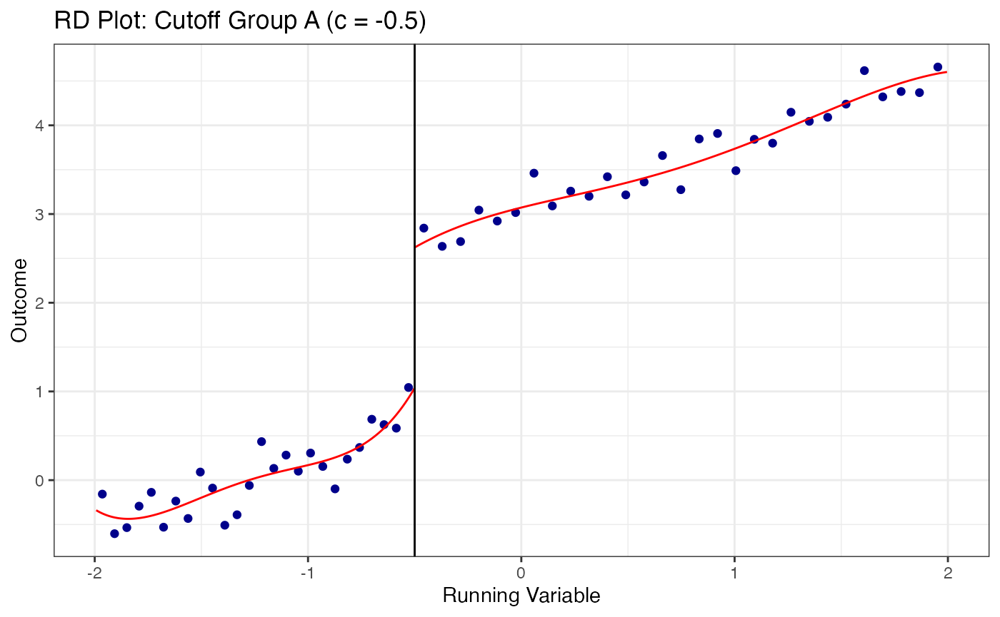
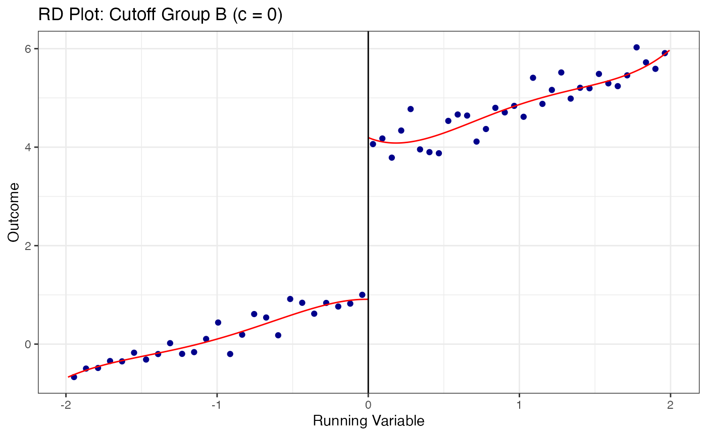
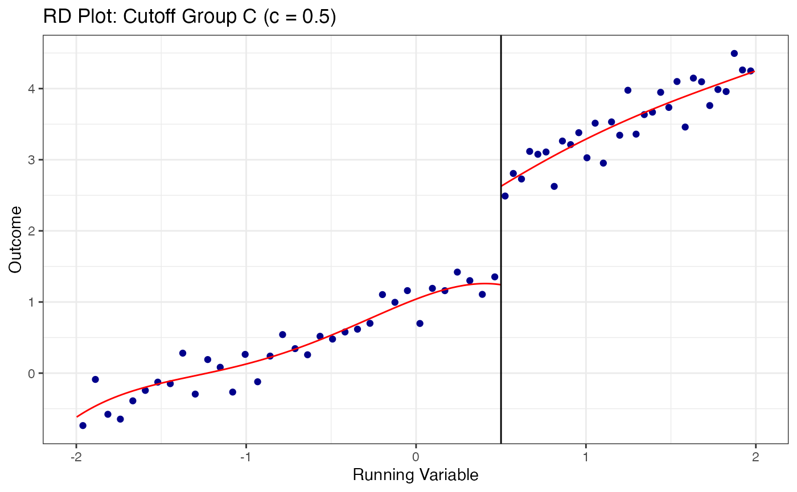
9. RD Bounds with the rdbounds Package and causalverse
When manipulation of the running variable is present or cannot be ruled out, standard RD estimates may be biased. Gerard, Rokkanen, and Rothe (2020) develop a framework for bounding the treatment effect under varying assumptions about the share of “always-assigned” units – those who manipulate their running variable to receive treatment.
The rdbounds package computes these bounds, and causalverse::plot_rd_aa_share() provides a clean visualization.
9.1 Conceptual Framework
The key idea is:
- Let denote the share of always-assigned (manipulating) units
- For each assumed value of , the treatment effect is partially identified (bounded)
- As increases (more manipulation assumed), the bounds widen
- At (no manipulation), we recover the standard RD point estimate
The data itself provides an estimate of the manipulation share (from the density discontinuity).
9.2 Full rdbounds Workflow for Sharp RD
library(rdbounds)
# Step 1: Generate sample data from rdbounds
set.seed(1)
rd_bound_data <- rdbounds::rdbounds_sampledata(10000, covs = FALSE)
#> [1] "True tau: 0.117999815082062"
#> [1] "True treatment effect on potentially-assigned: 2"
#> [1] "True treatment effect on right side of cutoff: 2.35399944524618"
# Step 2: Estimate bounds
rdbounds_est <- rdbounds::rdbounds(
y = rd_bound_data$y,
x = rd_bound_data$x,
treatment = rd_bound_data$treatment,
c = 0,
discrete_x = FALSE,
discrete_y = FALSE,
bwsx = c(.2, .5),
bwy = 1,
kernel = "epanechnikov",
orders = 1,
evaluation_ys = seq(from = 0, to = 15, by = 1),
refinement_A = TRUE,
refinement_B = TRUE,
right_effects = TRUE,
potential_taus = c(.025, .05, .1, .2),
yextremes = c(0, 15),
num_bootstraps = 5
)
#> [1] "The proportion of always-assigned units just to the right of the cutoff is estimated to be 0"
#> [1] "2026-03-22 00:21:12.434436 Estimating CDFs for point estimates"
#> [1] "2026-03-22 00:21:12.771561 .....Estimating CDFs for units just to the right of the cutoff"
#> [1] "2026-03-22 00:21:15.910835 Estimating CDFs with nudged tau (tau_star)"
#> [1] "2026-03-22 00:21:15.966282 .....Estimating CDFs for units just to the right of the cutoff"
#> [1] "2026-03-22 00:21:19.602653 Beginning parallelized output by bootstrap.."
#> [1] "2026-03-22 00:21:24.459971 Estimating CDFs with fixed tau value of: 0.025"
#> [1] "2026-03-22 00:21:24.528206 Estimating CDFs with fixed tau value of: 0.05"
#> [1] "2026-03-22 00:21:24.698436 Estimating CDFs with fixed tau value of: 0.1"
#> [1] "2026-03-22 00:21:24.720228 Estimating CDFs with fixed tau value of: 0.2"
#> [1] "2026-03-22 00:21:25.587484 Beginning parallelized output by bootstrap x fixed tau.."
#> [1] "2026-03-22 00:21:26.892374 Computing Confidence Intervals"
#> [1] "2026-03-22 00:21:37.337322 Time taken:0.42 minutes"
# Step 3: Visualize bounds for SRD
causalverse::plot_rd_aa_share(
data = rdbounds_est,
rd_type = "SRD",
x_label = "Share of Always-assigned Units",
y_label = "ATE",
plot_title = "RD Bounds (Sharp RD)",
tau = TRUE,
bounds_CI = TRUE,
ref_line = 0,
show_naive = TRUE
)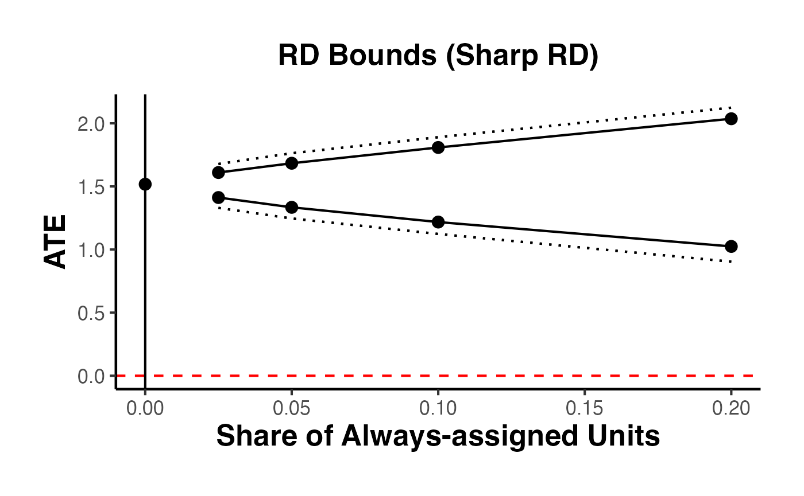
The resulting plot displays:
- Solid lines: upper and lower bounds on the treatment effect as a function of the assumed share of always-assigned units
- Dotted lines: confidence intervals for those bounds
- Vertical solid line: the estimated share of always-assigned units ()
- Horizontal dashed line: reference line (typically zero, to assess whether the treatment effect can be signed)
- Point at zero: the naive (standard) RD estimate
9.3 Full rdbounds Workflow for Fuzzy RD
# Visualize bounds for FRD
causalverse::plot_rd_aa_share(
data = rdbounds_est,
rd_type = "FRD",
x_label = "Share of Always-assigned Units",
y_label = "LATE",
plot_title = "RD Bounds (Fuzzy RD)",
tau = TRUE,
tau_CI = TRUE, # show CIs for tau-hat
bounds_CI = TRUE,
ref_line = 0,
show_naive = TRUE
)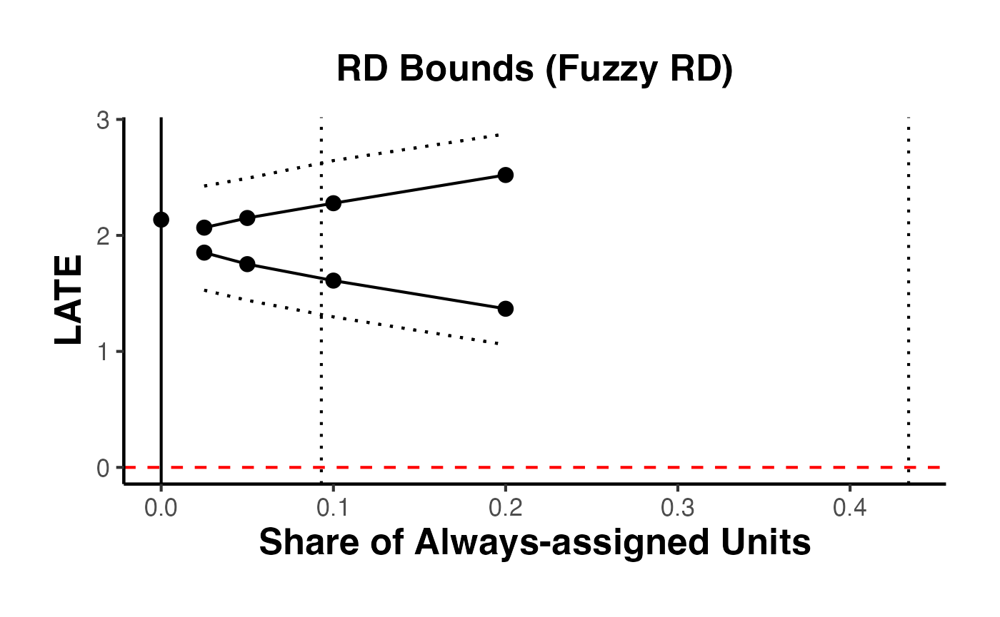
9.4 Customizing the Bounds Plot
The plot_rd_aa_share() function accepts several customization arguments:
# Minimal plot: just the bounds, no extras
causalverse::plot_rd_aa_share(
data = rdbounds_est,
rd_type = "SRD",
tau = FALSE,
tau_CI = FALSE,
bounds_CI = FALSE,
ref_line = NULL,
show_naive = FALSE,
plot_title = "Manipulation Bounds (Minimal)"
)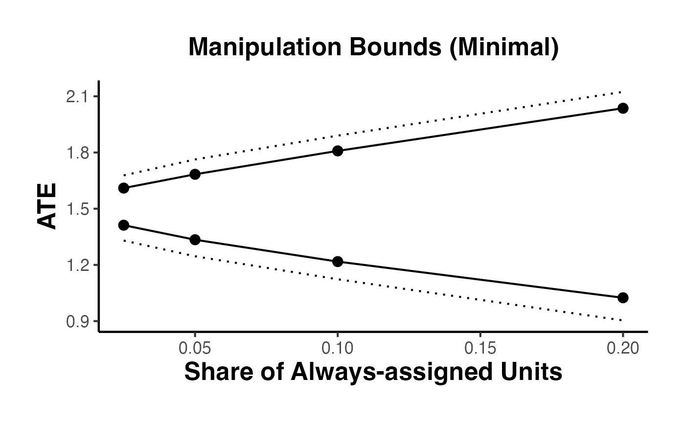
# Full plot with all options
causalverse::plot_rd_aa_share(
data = rdbounds_est,
rd_type = "SRD",
tau = TRUE,
tau_CI = TRUE,
bounds_CI = TRUE,
ref_line = 0,
show_naive = TRUE,
plot_title = "Manipulation Bounds (Full)",
subtitle = "Gerard, Rokkanen, and Rothe (2020)"
)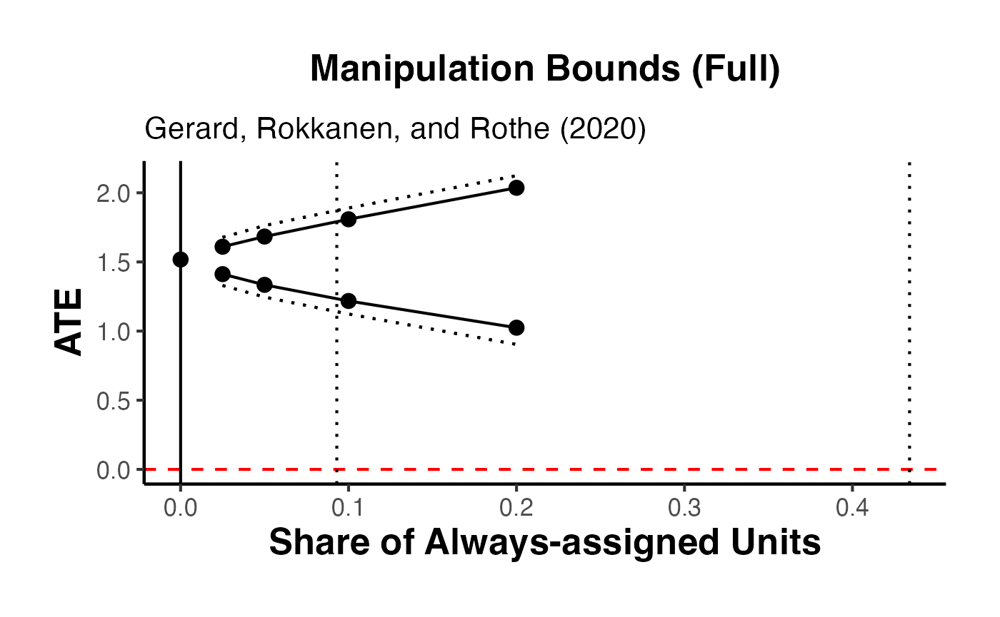
10. Fuzzy RD in Detail
In a Fuzzy RD design, the cutoff does not perfectly determine treatment. Instead, the probability of treatment jumps at the cutoff but does not go from 0 to 1. This setup requires an instrumental variables (IV) approach.
10.1 First Stage: Cutoff Predicts Treatment
The first stage verifies that crossing the cutoff significantly predicts treatment receipt.
# First stage regression
first_stage <- feols(treated ~ above + x + x_above, data = fuzzy_data)
summary(first_stage)
#> OLS estimation, Dep. Var.: treated
#> Observations: 3,000
#> Standard-errors: IID
#> Estimate Std. Error t value Pr(>|t|)
#> (Intercept) 0.147200 0.020933 7.031959 2.5123e-12 ***
#> above 0.552579 0.030179 18.309793 < 2.2e-16 ***
#> x -0.009064 0.036240 -0.250108 8.0252e-01
#> x_above -0.000984 0.052338 -0.018803 9.8500e-01
#> ---
#> Signif. codes: 0 '***' 0.001 '**' 0.01 '*' 0.05 '.' 0.1 ' ' 1
#> RMSE: 0.41223 Adj. R2: 0.30186
# Visual first stage
ggplot(fuzzy_data, aes(x = x, y = treated)) +
stat_summary_bin(
fun = mean, bins = 30, geom = "point",
size = 2, color = "steelblue"
) +
geom_vline(xintercept = 0, linetype = "dashed", color = "grey40") +
geom_smooth(
data = fuzzy_data |> filter(x < 0),
method = "lm", color = "steelblue", se = TRUE
) +
geom_smooth(
data = fuzzy_data |> filter(x >= 0),
method = "lm", color = "firebrick", se = TRUE
) +
labs(
x = "Running Variable",
y = "P(Treatment)",
title = "First Stage: Probability of Treatment"
) +
causalverse::ama_theme()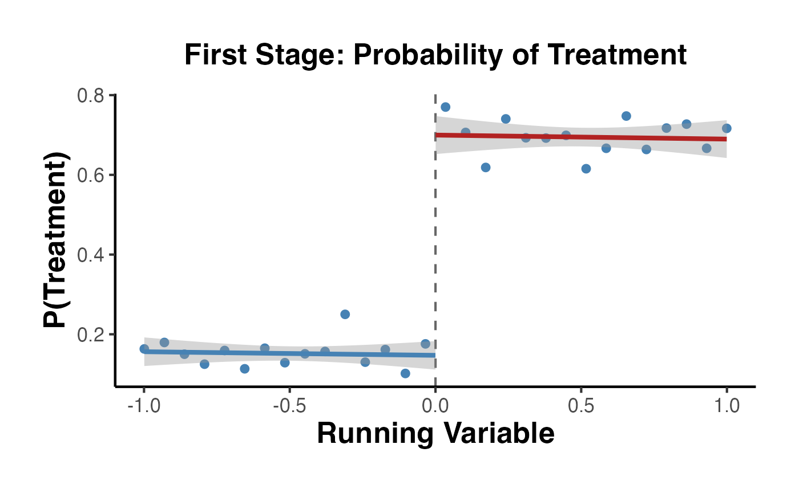
The first-stage F-statistic should be well above 10 (the Staiger-Stock rule of thumb) to avoid weak instrument problems.
10.2 Reduced Form: Cutoff Predicts Outcome
# Reduced form: effect of crossing cutoff on outcome
reduced_form <- feols(y ~ above + x + x_above, data = fuzzy_data)
summary(reduced_form)
#> OLS estimation, Dep. Var.: y
#> Observations: 3,000
#> Standard-errors: IID
#> Estimate Std. Error t value Pr(>|t|)
#> (Intercept) 1.529527 0.097820 15.63619 < 2.2e-16 ***
#> above 2.140490 0.141028 15.17773 < 2.2e-16 ***
#> x 0.660622 0.169347 3.90099 9.7904e-05 ***
#> x_above 1.133785 0.244574 4.63576 3.7083e-06 ***
#> ---
#> Signif. codes: 0 '***' 0.001 '**' 0.01 '*' 0.05 '.' 0.1 ' ' 1
#> RMSE: 1.92635 Adj. R2: 0.445124The reduced form shows the intention-to-treat (ITT) effect – the effect of being assigned above the cutoff on the outcome.
10.3 IV Estimation with fixest::feols()
The Fuzzy RD estimate is the ratio of the reduced form to the first stage. We can obtain this directly using the IV syntax in fixest:
# Fuzzy RD via IV
# treated is endogenous; above is the instrument
fuzzy_iv <- feols(y ~ x + x_above | 0 | treated ~ above, data = fuzzy_data)
summary(fuzzy_iv)
#> TSLS estimation - Dep. Var.: y
#> Endo. : treated
#> Instr. : above
#> Second stage: Dep. Var.: y
#> Observations: 3,000
#> Standard-errors: IID
#> Estimate Std. Error t value Pr(>|t|)
#> (Intercept) 0.959328 0.066722 14.37800 < 2.2e-16 ***
#> fit_treated 3.873640 0.134297 28.84390 < 2.2e-16 ***
#> x 0.695732 0.088388 7.87133 4.862e-15 ***
#> x_above 1.137597 0.128690 8.83981 < 2.2e-16 ***
#> ---
#> Signif. codes: 0 '***' 0.001 '**' 0.01 '*' 0.05 '.' 0.1 ' ' 1
#> RMSE: 1.01365 Adj. R2: 0.445124
#> F-test (1st stage), treated: stat = 335.24853, p < 2.2e-16 , on 1 and 2,996 DoF.
#> Wu-Hausman: stat = 0.51325, p = 0.473793, on 1 and 2,995 DoF.The IV coefficient on treated estimates the LATE for compliers at the cutoff. In our simulation, the true effect is 4.
10.4 Bandwidth Sensitivity for Fuzzy RD
bandwidths_fuzzy <- c(0.2, 0.3, 0.5, 0.75, 1.0)
fuzzy_bw_results <- lapply(bandwidths_fuzzy, function(h) {
sub <- fuzzy_data |> filter(abs(x) <= h)
est <- tryCatch({
feols(y ~ x + x_above | 0 | treated ~ above, data = sub)
}, error = function(e) NULL)
if (!is.null(est)) {
tibble(
bandwidth = h,
n_obs = nrow(sub),
estimate = coef(est)["fit_treated"],
se = se(est)["fit_treated"]
)
}
}) |>
bind_rows()
ggplot(fuzzy_bw_results, aes(x = factor(bandwidth), y = estimate)) +
geom_point(size = 3) +
geom_errorbar(aes(ymin = estimate - 1.96 * se, ymax = estimate + 1.96 * se),
width = 0.1) +
geom_hline(yintercept = 4, linetype = "dashed", color = "red") +
labs(
x = "Bandwidth",
y = "Fuzzy RD Estimate (LATE)",
title = "Fuzzy RD: IV Estimates by Bandwidth"
) +
causalverse::ama_theme()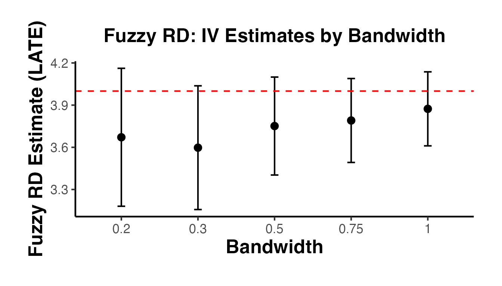
10.5 Fuzzy RD with rdrobust
The rdrobust package directly supports Fuzzy RD via the fuzzy argument:
library(rdrobust)
# Fuzzy RD estimation with rdrobust
fuzzy_robust <- rdrobust(
y = fuzzy_data$y,
x = fuzzy_data$x,
c = 0,
fuzzy = fuzzy_data$treated # pass the treatment variable
)
summary(fuzzy_robust)
#> Fuzzy RD estimates using local polynomial regression.
#>
#> Number of Obs. 3000
#> BW type mserd
#> Kernel Triangular
#> VCE method NN
#>
#> Number of Obs. 1516 1484
#> Eff. Number of Obs. 561 550
#> Order est. (p) 1 1
#> Order bias (q) 2 2
#> BW est. (h) 0.370 0.370
#> BW bias (b) 0.583 0.583
#> rho (h/b) 0.635 0.635
#> Unique Obs. 1516 1484
#>
#> First-stage estimates.
#>
#> =====================================================================
#> Point Robust Inference
#> Estimate z P>|z| [ 95% C.I. ]
#> =====================================================================
#> Rd Effect 0.635 10.344 0.000 [0.530 , 0.777]
#> =====================================================================
#>
#> Treatment effect estimates.
#>
#> =====================================================================
#> Point Robust Inference
#> Estimate z P>|z| [ 95% C.I. ]
#> ---------------------------------------------------------------------
#> RD Effect 3.602 13.001 0.000 [3.012 , 4.081]
#> =====================================================================
# Compare with the manual IV
cat("\nManual IV estimate:", round(coef(fuzzy_iv)["fit_treated"], 3), "\n")
#>
#> Manual IV estimate: 3.874
cat("rdrobust fuzzy estimate:", round(fuzzy_robust$coef["Conventional", ], 3), "\n")
#> rdrobust fuzzy estimate: 3.60211. Covariate Balance Tests
If the RD design is valid, pre-determined covariates should vary smoothly through the cutoff. A discontinuity in a covariate at the cutoff suggests that units on either side differ in ways beyond just treatment status, which would undermine the identification strategy.
11.1 Covariate-as-Outcome Tests
The standard approach uses each covariate as the “outcome” in an RD regression. The estimated “effect” at the cutoff should be close to zero and statistically insignificant.
# Test each covariate for a discontinuity at the cutoff
covariates_to_test <- c("age", "female", "education", "income")
balance_results <- lapply(covariates_to_test, function(cov) {
form <- as.formula(paste(cov, "~ treated + x + x_treated"))
est <- feols(form, data = rd_data)
tibble(
covariate = cov,
estimate = coef(est)["treated"],
se = se(est)["treated"],
p_value = pvalue(est)["treated"]
)
}) |>
bind_rows()
balance_results
#> # A tibble: 4 × 4
#> covariate estimate se p_value
#> <chr> <dbl> <dbl> <dbl>
#> 1 age 0.106 0.274 0.698
#> 2 female 0.0863 0.0450 0.0552
#> 3 education -0.0664 0.139 0.634
#> 4 income -249. 448. 0.57911.2 Visual Balance Check
ggplot(balance_results, aes(x = covariate, y = estimate)) +
geom_point(size = 3) +
geom_errorbar(
aes(ymin = estimate - 1.96 * se, ymax = estimate + 1.96 * se),
width = 0.15
) +
geom_hline(yintercept = 0, linetype = "dashed", color = "red") +
labs(
x = "Pre-determined Covariate",
y = "Estimated Discontinuity at Cutoff",
title = "Covariate Balance Check at the Cutoff"
) +
causalverse::ama_theme()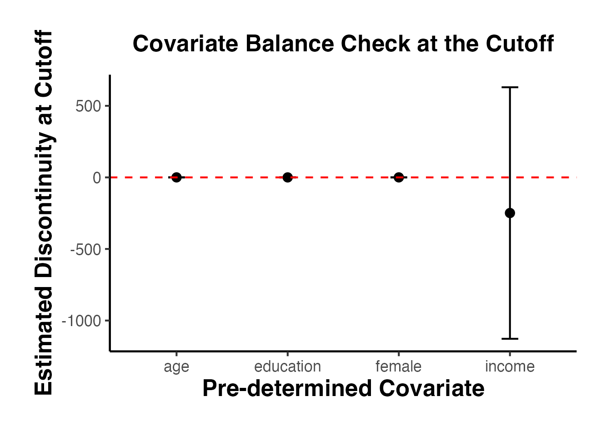
All estimates are close to zero with confidence intervals that include zero, consistent with a valid RD design.
11.3 Covariate Balance with rdrobust
For a more rigorous test using the optimal bandwidth selection of rdrobust:
library(rdrobust)
# Test each covariate with rdrobust
balance_robust <- lapply(covariates_to_test, function(cov) {
est <- rdrobust(y = rd_data[[cov]], x = rd_data$x, c = 0)
tibble(
covariate = cov,
estimate = est$coef["Conventional", ],
robust_ci_low = est$ci["Robust", 1],
robust_ci_up = est$ci["Robust", 2],
p_value_robust = est$pv["Robust", ]
)
}) |>
bind_rows()
balance_robust
#> # A tibble: 4 × 5
#> covariate estimate robust_ci_low robust_ci_up p_value_robust
#> <chr> <dbl> <dbl> <dbl> <dbl>
#> 1 age -0.623 -1.84 0.390 0.203
#> 2 female 0.106 -0.0837 0.287 0.282
#> 3 education -0.142 -0.679 0.542 0.826
#> 4 income -35.2 -2283. 1797. 0.81511.4 Visual Covariate Plots
# Plot each covariate against the running variable
cov_plot_data <- rd_data |>
dplyr::select(x, treated, age, female, education, income) |>
tidyr::pivot_longer(
cols = c(age, female, education, income),
names_to = "covariate",
values_to = "value"
)
ggplot(cov_plot_data, aes(x = x, y = value, color = factor(treated))) +
geom_point(alpha = 0.1, size = 0.5) +
geom_smooth(method = "loess", span = 0.5, se = TRUE) +
geom_vline(xintercept = 0, linetype = "dashed", color = "grey40") +
facet_wrap(~covariate, scales = "free_y") +
scale_color_manual(
values = c("0" = "steelblue", "1" = "firebrick"),
labels = c("Control", "Treated")
) +
labs(
x = "Running Variable",
y = "Covariate Value",
color = "Group",
title = "Covariate Smoothness Through the Cutoff"
) +
causalverse::ama_theme()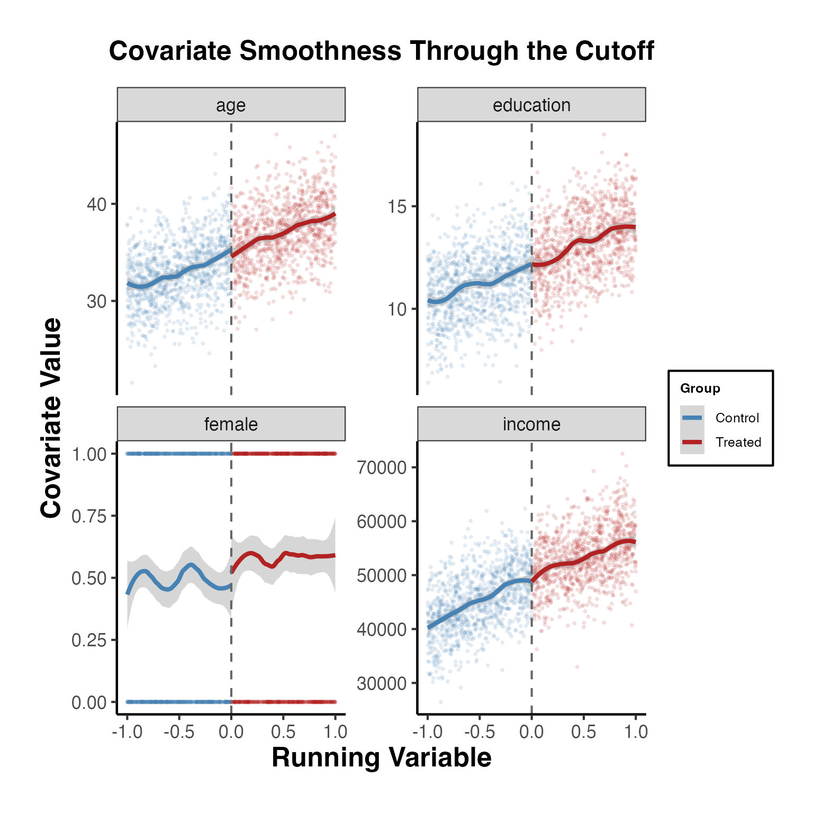
12. Lee Bounds and the Connection to RD
Lee (2009) bounds are primarily used in settings with sample selection (attrition), but the bounding approach has connections to RD designs with manipulation. When some units manipulate their running variable to receive treatment, this is analogous to selection, and bounding methods can help.
The causalverse::lee_bounds() function computes Lee bounds for the average direct effect for always-takers, using the framework from Kwon and Roth (2023). While originally developed for mediation analysis, this can be applied to RD-adjacent settings where treatment effects need to be bounded.
12.1 Using lee_bounds() from causalverse
# Example: Lee bounds for always-takers
# Requires MedBounds package (now TestMechs)
# d = treatment, m = mediator, y = outcome
# In an RD context, one can think of:
# d = above the cutoff (instrument)
# m = actual treatment receipt (endogenous)
# y = outcome
lee_result <- causalverse::lee_bounds(
df = fuzzy_data,
d = "above",
m = "treated",
y = "y",
numdraws = 500
)
lee_result
#> term estimate std.error
#> 1 Lower bound -0.3395429 0.09247476
#> 2 Upper bound 2.8086237 0.09731666
# With a known ratio of complier-to-always-taker effects
# (point-identifies the effect)
lee_point <- causalverse::lee_bounds(
df = fuzzy_data,
d = "above",
m = "treated",
y = "y",
c_at_ratio = 1,
numdraws = 500
)
lee_point
#> term estimate std.error
#> 1 Point estimate 1.234139 0.077956913. Sharp RD Estimation with fixest
While rdrobust is the gold standard for nonparametric RD estimation, a parametric approach using fixest::feols() is useful for understanding the mechanics and for quick analyses.
13.1 Local Linear Regression
# Full sample: local linear with interaction
est_full <- feols(y ~ treated + x + x_treated, data = rd_data)
summary(est_full)
#> OLS estimation, Dep. Var.: y
#> Observations: 2,000
#> Standard-errors: IID
#> Estimate Std. Error t value Pr(>|t|)
#> (Intercept) 2.328170 0.032296 72.08775 < 2.2e-16 ***
#> treated 3.122841 0.046290 67.46324 < 2.2e-16 ***
#> x 0.507031 0.054628 9.28149 < 2.2e-16 ***
#> x_treated 2.019449 0.078817 25.62198 < 2.2e-16 ***
#> ---
#> Signif. codes: 0 '***' 0.001 '**' 0.01 '*' 0.05 '.' 0.1 ' ' 1
#> RMSE: 0.5115 Adj. R2: 0.95611413.2 Bandwidth Sensitivity
bandwidths <- c(0.15, 0.25, 0.35, 0.5, 0.75, 1.0)
bw_results <- lapply(bandwidths, function(h) {
sub <- rd_data |> filter(abs(x) <= h)
est <- feols(y ~ treated + x + x_treated, data = sub)
tibble(
bandwidth = h,
n_obs = nrow(sub),
estimate = coef(est)["treated"],
se = se(est)["treated"]
)
}) |>
bind_rows()
bw_results
#> # A tibble: 6 × 4
#> bandwidth n_obs estimate se
#> <dbl> <int> <dbl> <dbl>
#> 1 0.15 296 3.07 0.115
#> 2 0.25 483 3.06 0.0921
#> 3 0.35 676 3.04 0.0760
#> 4 0.5 969 3.00 0.0642
#> 5 0.75 1466 3.06 0.0539
#> 6 1 2000 3.12 0.0463
ggplot(bw_results, aes(x = factor(bandwidth), y = estimate)) +
geom_point(size = 3) +
geom_errorbar(
aes(ymin = estimate - 1.96 * se, ymax = estimate + 1.96 * se),
width = 0.1
) +
geom_hline(yintercept = 3, linetype = "dashed", color = "red") +
labs(
x = "Bandwidth",
y = "Estimated Treatment Effect",
title = "Sharp RD Estimates by Bandwidth (fixest)"
) +
causalverse::ama_theme()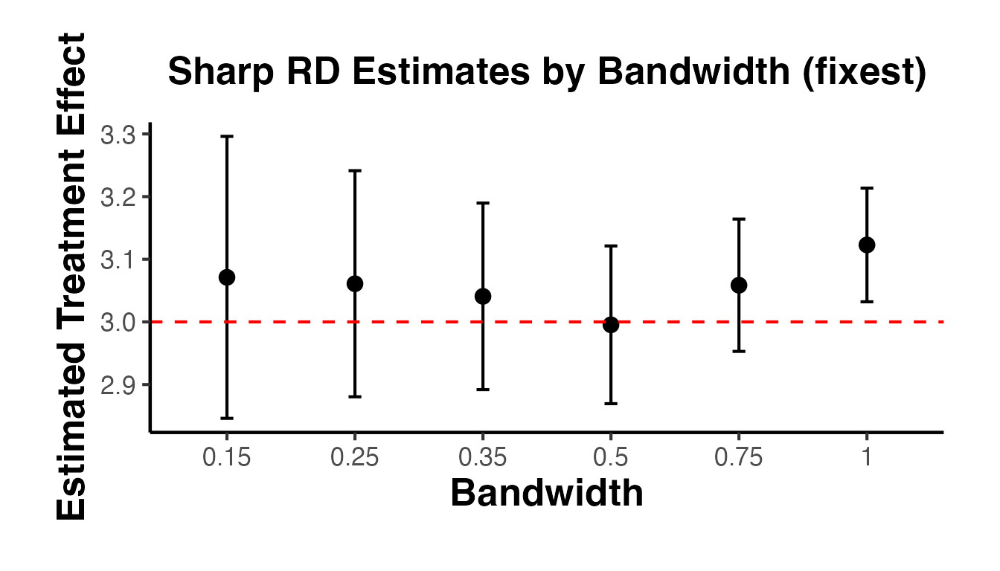
The dashed red line marks the true effect of 3.
13.3 Higher-Order Polynomial Specifications
# Local quadratic
rd_data <- rd_data |>
mutate(
x2 = x^2,
x2_treated = x^2 * treated,
x3 = x^3,
x3_treated = x^3 * treated
)
# Linear
est_p1 <- feols(y ~ treated + x + x_treated, data = rd_data)
# Quadratic
est_p2 <- feols(y ~ treated + x + x_treated + x2 + x2_treated, data = rd_data)
# Cubic
est_p3 <- feols(y ~ treated + x + x_treated + x2 + x2_treated + x3 + x3_treated,
data = rd_data)
poly_comparison <- tibble(
polynomial = c("Linear (p=1)", "Quadratic (p=2)", "Cubic (p=3)"),
estimate = c(coef(est_p1)["treated"], coef(est_p2)["treated"],
coef(est_p3)["treated"]),
se = c(se(est_p1)["treated"], se(est_p2)["treated"],
se(est_p3)["treated"])
)
poly_comparison
#> # A tibble: 3 × 3
#> polynomial estimate se
#> <chr> <dbl> <dbl>
#> 1 Linear (p=1) 3.12 0.0463
#> 2 Quadratic (p=2) 2.97 0.0685
#> 3 Cubic (p=3) 3.08 0.091113.4 Triangular Kernel Weights
To mimic the triangular kernel weighting used in rdrobust, we can apply weights in feols():
# Triangular kernel: weight = 1 - |x|/h for |x| <= h
h <- 0.5
rd_data_weighted <- rd_data |>
filter(abs(x) <= h) |>
mutate(kernel_weight = 1 - abs(x) / h)
est_weighted <- feols(
y ~ treated + x + x_treated,
data = rd_data_weighted,
weights = ~kernel_weight
)
summary(est_weighted)
#> OLS estimation, Dep. Var.: y
#> Observations: 969
#> Weights: kernel_weight
#> Standard-errors: IID
#> Estimate Std. Error t value Pr(>|t|)
#> (Intercept) 2.47640 0.038307 64.64691 < 2.2e-16 ***
#> treated 3.02984 0.055400 54.69057 < 2.2e-16 ***
#> x 1.12227 0.189029 5.93701 4.0455e-09 ***
#> x_treated 1.11819 0.274109 4.07936 4.8887e-05 ***
#> ---
#> Signif. codes: 0 '***' 0.001 '**' 0.01 '*' 0.05 '.' 0.1 ' ' 1
#> RMSE: 0.502592 Adj. R2: 0.92761414. Heterogeneous Treatment Effects in RD with rdhte
The rdhte package (Calonico, Cattaneo, and Titiunik 2025) is a recent addition (2025) to the RD ecosystem by Calonico, Cattaneo, and co-authors. It provides tools for estimating covariate-moderated treatment effects at the cutoff — that is, how the RD treatment effect varies as a function of observed covariates.
Key functions include:
-
rdhte(): Estimate heterogeneous (conditional) treatment effects at the RD cutoff for different covariate subgroups. -
rdbwhte(): Data-driven bandwidth selection optimized for heterogeneous treatment effect estimation. -
rdhte_lincom(): Compute linear combinations of heterogeneous effects (e.g., weighted averages, contrasts between subgroups).
14.1 Simulated Example
library(rdhte)
set.seed(42)
n <- 2000
# Running variable centered at 0
x <- runif(n, -1, 1)
# Binary covariate: group membership
group <- rbinom(n, 1, 0.5)
# Treatment indicator (sharp RD at cutoff = 0)
treated <- as.integer(x >= 0)
# Heterogeneous treatment effect: group 1 has larger effect
tau <- ifelse(group == 1, 3, 1)
y <- 0.5 * x + treated * tau + 0.3 * group + rnorm(n, sd = 0.5)
dat_hte <- data.frame(y = y, x = x, group = group)
# Estimate heterogeneous treatment effects by group
hte_fit <- rdhte(y = dat_hte$y, x = dat_hte$x, covs_hte = dat_hte$group)
summary(hte_fit)14.2 Bandwidth Selection for HTE
# Optimal bandwidth for heterogeneous effects
bw_hte <- rdbwhte(y = dat_hte$y, x = dat_hte$x, covs_hte = dat_hte$group)
summary(bw_hte)14.3 Linear Combinations of Effects
# Test whether treatment effect differs across groups
lincom_fit <- rdhte_lincom(hte_fit)
summary(lincom_fit)The rdhte framework is especially useful when researchers want to move beyond the average treatment effect at the cutoff and explore whether the policy effect is concentrated among particular subpopulations.
15. Boundary/Geographic RD with rd2d
The rd2d package (Cattaneo, Titiunik, and Yu 2025) by Cattaneo, Titiunik, and Yu (2025) extends RD methods to settings with bivariate running variables — most commonly geographic or spatial RD designs where treatment assignment depends on a unit’s location relative to a boundary in two-dimensional space.
Key features:
-
rd2d(): Estimate RD treatment effects with two running variables (e.g., latitude and longitude). - Accommodates arbitrary boundary shapes in geographic discontinuity designs.
- Provides data-driven bandwidth selection in two dimensions.
15.1 Simulated Example
library(rd2d)
set.seed(42)
n <- 2000
# Two running variables: coordinates on a plane
x1 <- runif(n, -1, 1)
x2 <- runif(n, -1, 1)
# Treatment: assigned when above a linear boundary x2 > 0.3 * x1
boundary_val <- 0.3 * x1
treated_2d <- as.integer(x2 >= boundary_val)
# Outcome with treatment effect of 2
y_2d <- 0.5 * x1 - 0.3 * x2 + 2 * treated_2d + rnorm(n, sd = 0.8)
# Distance to boundary (signed)
dist_to_boundary <- x2 - boundary_val
dat_2d <- data.frame(
y = y_2d,
x1 = x1,
x2 = x2,
d = treated_2d
)
# Estimate geographic RD
rd2d_fit <- rd2d(
Y = dat_2d$y,
X1 = dat_2d$x1,
X2 = dat_2d$x2,
zvar = dat_2d$d
)
summary(rd2d_fit)15.2 Rich Geographic Visualizations
Geographic RD designs are best understood visually. The four panels below mirror how applied researchers present spatial discontinuities in top journals.
Panel 1: Treatment Boundary Map
# ── Simulate realistic geographic coordinates ──────────────────────────────
set.seed(42)
n_geo <- 3000
# Simulate "longitude" (-100 to -80) and "latitude" (35 to 50)
# Boundary: a north-south state line at longitude = -90 (e.g., Missouri/Kansas)
lon <- runif(n_geo, -100, -80)
lat <- runif(n_geo, 35, 50)
# Treatment: units east of the boundary (lon > -90) are treated
boundary_lon <- -90
treated_geo <- as.integer(lon > boundary_lon)
# Outcome: income ~ treatment + location + noise
income <- 30000 + 5000 * treated_geo +
800 * (lat - 42) +
200 * (lon + 90) +
rnorm(n_geo, 0, 3000)
geo_df <- data.frame(lon = lon, lat = lat,
treated = factor(treated_geo,
labels = c("Control (West)", "Treated (East)")),
income = income)
# Treatment boundary map
ggplot2::ggplot(geo_df, ggplot2::aes(x = lon, y = lat, colour = treated)) +
ggplot2::geom_point(alpha = 0.25, size = 0.9) +
ggplot2::geom_vline(xintercept = boundary_lon,
linewidth = 1.4, colour = "black", linetype = "solid") +
ggplot2::annotate("label", x = boundary_lon, y = 49,
label = "Policy boundary\n(lon = -90)", size = 3.5,
colour = "black", fill = "white", label.size = 0.3) +
ggplot2::annotate("text", x = -96, y = 36.5,
label = "Control region\n(No policy)", size = 3.5,
colour = "#4575b4", fontface = "italic") +
ggplot2::annotate("text", x = -84, y = 36.5,
label = "Treated region\n(Policy active)", size = 3.5,
colour = "#d73027", fontface = "italic") +
ggplot2::scale_colour_manual(
values = c("Control (West)" = "#4575b4", "Treated (East)" = "#d73027"),
name = NULL) +
ggplot2::labs(
title = "Geographic Regression Discontinuity Design",
subtitle = "Treatment is assigned to units east of a state-line boundary",
x = "Longitude", y = "Latitude"
) +
ggplot2::theme_minimal(base_size = 12) +
ggplot2::theme(
legend.position = "bottom",
plot.title = ggplot2::element_text(face = "bold", size = 14),
panel.grid.minor = ggplot2::element_blank()
)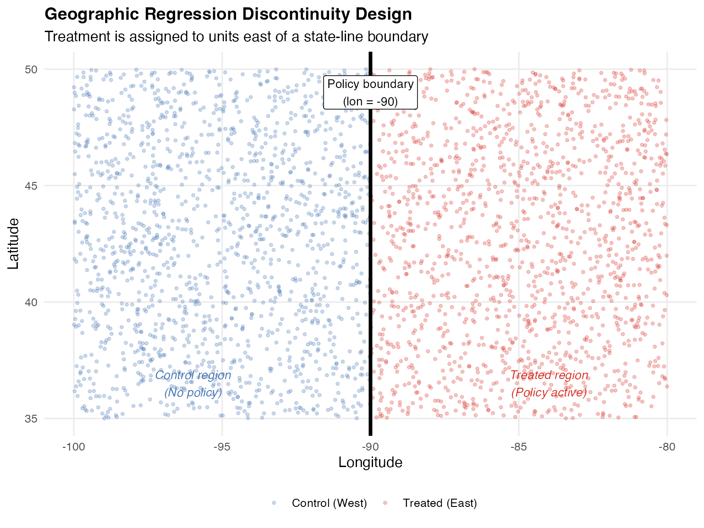
Panel 2: Outcome Heat Map (Choropleth)
# Bin geographic space into grid cells and show average income
geo_df$lon_bin <- cut(geo_df$lon, breaks = 20)
geo_df$lat_bin <- cut(geo_df$lat, breaks = 15)
grid_df <- geo_df |>
dplyr::group_by(lon_bin, lat_bin) |>
dplyr::summarise(
avg_income = mean(income),
lon_mid = mean(lon),
lat_mid = mean(lat),
.groups = "drop"
)
ggplot2::ggplot(grid_df, ggplot2::aes(x = lon_mid, y = lat_mid,
fill = avg_income)) +
ggplot2::geom_tile(width = 1, height = 0.95, alpha = 0.85) +
ggplot2::geom_vline(xintercept = boundary_lon,
linewidth = 1.8, colour = "white", linetype = "dashed") +
ggplot2::scale_fill_gradientn(
colours = c("#313695","#4575b4","#74add1","#abd9e9",
"#fee090","#fdae61","#f46d43","#d73027","#a50026"),
name = "Avg. Income ($)",
labels = scales::comma
) +
ggplot2::annotate("label", x = boundary_lon, y = 49.2,
label = "Boundary", size = 3.5,
colour = "white", fill = "grey30", label.size = 0) +
ggplot2::labs(
title = "Outcome Surface: Average Income by Geographic Cell",
subtitle = "Jump in income at the policy boundary is clearly visible",
x = "Longitude", y = "Latitude"
) +
ggplot2::theme_minimal(base_size = 12) +
ggplot2::theme(
plot.title = ggplot2::element_text(face = "bold", size = 14),
legend.position = "right",
panel.grid = ggplot2::element_blank()
)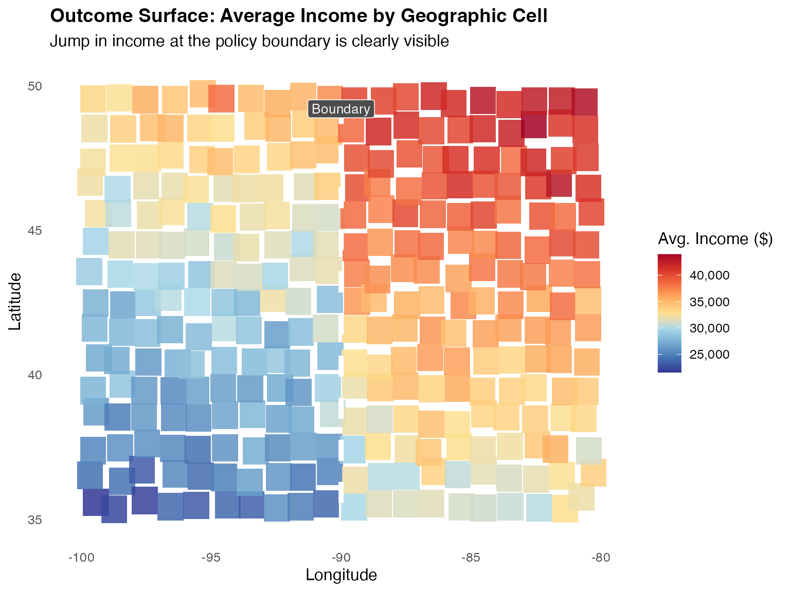
Panel 3: Density of Units Near the Boundary
# Units within 5 degrees of the boundary - the "bandwidth window"
bw <- 5
near_df <- geo_df[abs(geo_df$lon - boundary_lon) <= bw, ]
ggplot2::ggplot(near_df, ggplot2::aes(x = lon, y = lat, colour = treated)) +
ggplot2::geom_point(alpha = 0.35, size = 1.2) +
ggplot2::geom_vline(xintercept = boundary_lon,
linewidth = 1.6, colour = "black") +
ggplot2::geom_vline(xintercept = c(boundary_lon - bw, boundary_lon + bw),
linewidth = 0.7, colour = "grey50", linetype = "dotted") +
ggplot2::scale_colour_manual(
values = c("Control (West)" = "#4575b4", "Treated (East)" = "#d73027"),
name = NULL) +
ggplot2::annotate("rect",
xmin = boundary_lon - bw, xmax = boundary_lon + bw,
ymin = -Inf, ymax = Inf, alpha = 0.05, fill = "gold") +
ggplot2::annotate("text", x = boundary_lon - bw/2, y = 49.5,
label = "Bandwidth\nwindow", size = 3, colour = "grey40") +
ggplot2::annotate("text", x = boundary_lon + bw/2, y = 49.5,
label = "Bandwidth\nwindow", size = 3, colour = "grey40") +
ggplot2::labs(
title = "Zoom-In: Units Within Bandwidth of the Boundary",
subtitle = paste0("Local comparison window: ±", bw, "° longitude"),
x = "Longitude", y = "Latitude"
) +
ggplot2::theme_minimal(base_size = 12) +
ggplot2::theme(
legend.position = "bottom",
plot.title = ggplot2::element_text(face = "bold", size = 14)
)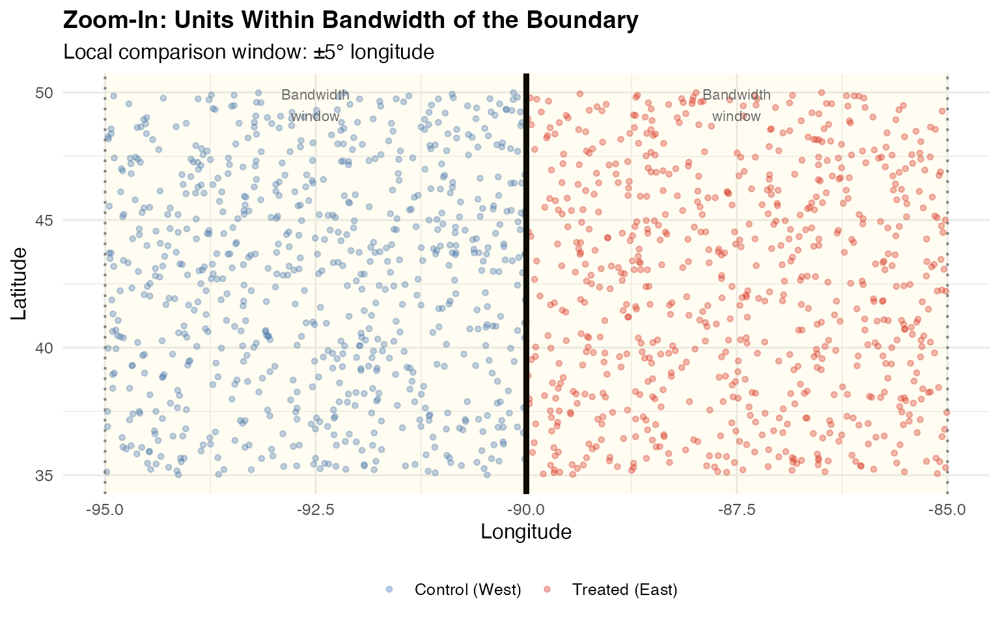
Panel 4: The Jump at the Boundary (RD Plot)
# Bin by distance to boundary and plot mean income - the canonical RD plot
geo_df$dist_to_bound <- geo_df$lon - boundary_lon
geo_df$dist_bin <- cut(geo_df$dist_to_bound,
breaks = seq(-10, 10, by = 0.5), include.lowest = TRUE)
rd_plot_df <- geo_df |>
dplyr::group_by(dist_bin) |>
dplyr::summarise(
avg_income = mean(income),
dist_mid = mean(dist_to_bound),
n = dplyr::n(),
se = sd(income) / sqrt(dplyr::n()),
.groups = "drop"
) |>
dplyr::filter(!is.na(dist_mid)) |>
dplyr::mutate(side = ifelse(dist_mid < 0, "Control (West)", "Treated (East)"))
ggplot2::ggplot(rd_plot_df,
ggplot2::aes(x = dist_mid, y = avg_income,
colour = side, fill = side)) +
ggplot2::geom_ribbon(ggplot2::aes(
ymin = avg_income - 1.96 * se,
ymax = avg_income + 1.96 * se), alpha = 0.15, colour = NA) +
ggplot2::geom_point(size = 2.5) +
ggplot2::geom_smooth(data = rd_plot_df[rd_plot_df$dist_mid < 0, ],
method = "lm", se = FALSE, linewidth = 1.2) +
ggplot2::geom_smooth(data = rd_plot_df[rd_plot_df$dist_mid > 0, ],
method = "lm", se = FALSE, linewidth = 1.2) +
ggplot2::geom_vline(xintercept = 0, linewidth = 1.2,
colour = "black", linetype = "dashed") +
ggplot2::scale_colour_manual(
values = c("Control (West)" = "#4575b4", "Treated (East)" = "#d73027"),
name = NULL) +
ggplot2::scale_fill_manual(
values = c("Control (West)" = "#4575b4", "Treated (East)" = "#d73027"),
name = NULL) +
ggplot2::scale_y_continuous(labels = scales::comma) +
ggplot2::annotate("segment",
x = 0.3, xend = 0.3,
y = mean(rd_plot_df$avg_income[rd_plot_df$side == "Control (West)"]),
yend = mean(rd_plot_df$avg_income[rd_plot_df$side == "Treated (East)"]),
arrow = ggplot2::arrow(ends = "both", length = ggplot2::unit(0.08, "inches")),
colour = "black", linewidth = 0.8) +
ggplot2::annotate("text", x = 1.5, y = mean(rd_plot_df$avg_income),
label = paste0("Jump ≈ $", scales::comma(5000)),
size = 3.5, colour = "black", fontface = "bold") +
ggplot2::labs(
title = "RD Plot: Income Jump at the Geographic Boundary",
subtitle = "Each dot = mean income within a 0.5° longitude bin; ribbons = 95% CI",
x = "Distance from Policy Boundary (degrees longitude)",
y = "Average Annual Income ($)"
) +
ggplot2::theme_minimal(base_size = 12) +
ggplot2::theme(
legend.position = "bottom",
plot.title = ggplot2::element_text(face = "bold", size = 14)
)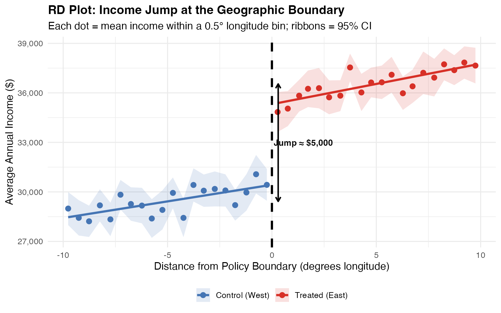
Geographic RD designs arise naturally in studies of redistricting, cross-border policy differences, environmental regulations, and school attendance zones. The four visualizations above - boundary map, outcome choropleth, bandwidth zoom, and RD jump plot - are the standard diagnostic figures for a geographic RD paper.
16. Regression Kink Design
The Regression Kink Design (RKD), introduced by (card2015inference?), identifies causal effects from a change in the slope (kink) of a policy function at a known threshold, rather than a change in the level (discontinuity). This is useful when treatment intensity changes at the cutoff but treatment itself does not switch on or off.
16.1 Theory
In a standard RD, we look for a jump in at . In an RKD, the policy function is continuous at but has a kink — its first derivative changes:
The numerator is the change in the slope of the outcome and the denominator is the change in the slope of the treatment-determining function.
16.2 Estimation with rdrobust
The rdrobust package supports kink estimation by setting deriv = 1, which estimates the change in the first derivative at the cutoff rather than the change in level:
library(rdrobust)
set.seed(42)
n <- 4000
# Running variable
x_rkd <- runif(n, -2, 2)
# Policy function with a kink at 0: slope changes from 0.5 to 1.5
B_rkd <- ifelse(x_rkd < 0, 0.5 * x_rkd, 1.5 * x_rkd)
# Outcome: responds to the policy function with coefficient 2
y_rkd <- 2 * B_rkd + 0.3 * x_rkd^2 + rnorm(n, sd = 0.8)
# Estimate the kink: deriv = 1 targets the slope change
rkd_fit <- rdrobust(y = y_rkd, x = x_rkd, deriv = 1)
summary(rkd_fit)
#> Sharp Kink RD estimates using local polynomial regression.
#>
#> Number of Obs. 4000
#> BW type mserd
#> Kernel Triangular
#> VCE method NN
#>
#> Number of Obs. 1998 2002
#> Eff. Number of Obs. 915 887
#> Order est. (p) 2 2
#> Order bias (q) 3 3
#> BW est. (h) 0.927 0.927
#> BW bias (b) 1.326 1.326
#> rho (h/b) 0.699 0.699
#> Unique Obs. 1998 2002
#>
#> =====================================================================
#> Point Robust Inference
#> Estimate z P>|z| [ 95% C.I. ]
#> ---------------------------------------------------------------------
#> RD Effect 2.181 2.221 0.026 [0.273 , 4.370]
#> =====================================================================16.3 Visualizing the Kink
dat_rkd <- data.frame(x = x_rkd, y = y_rkd, B = B_rkd)
ggplot(dat_rkd, aes(x = x, y = y)) +
geom_point(alpha = 0.15, size = 0.6, color = "grey50") +
geom_smooth(data = subset(dat_rkd, x < 0),
method = "lm", formula = y ~ poly(x, 2),
se = FALSE, color = "steelblue", linewidth = 1) +
geom_smooth(data = subset(dat_rkd, x >= 0),
method = "lm", formula = y ~ poly(x, 2),
se = FALSE, color = "firebrick", linewidth = 1) +
geom_vline(xintercept = 0, linetype = "dashed") +
labs(
title = "Regression Kink Design: Slope Change at the Cutoff",
x = "Running Variable",
y = "Outcome"
) +
causalverse::ama_theme()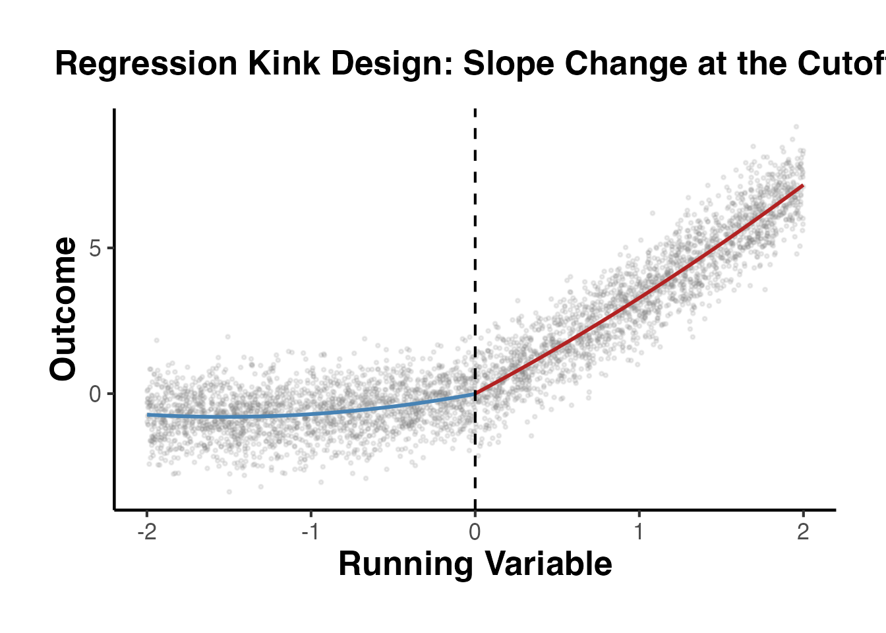
The key identifying assumption in an RKD is that all other determinants of the outcome have a smooth conditional density at the kink point, analogous to the continuity assumption in a standard RD.
17. RD with Discrete Running Variable
When the running variable takes on only a finite number of values (e.g., integer test scores, age in years, vote counts), standard RD methods face challenges because the continuity framework breaks down. (lee2008randomized?) discuss how discreteness introduces specification uncertainty and propose methods to account for it.
17.1 Key Challenges
- Mass points: Multiple observations share the same value of the running variable, creating atoms in the distribution.
- Specification sensitivity: With few unique values near the cutoff, polynomial choice and bandwidth selection become fragile.
- Asymptotic invalidity: Standard local polynomial estimators rely on a continuous running variable; with discrete scores, bias may not vanish asymptotically.
17.2 Binomial Test Approach
One approach is to treat observations at each value of the running variable as a group and use a binomial test to assess whether treatment assignment at the cutoff is consistent with local random assignment:
set.seed(42)
n <- 3000
# Discrete running variable: integer scores from -10 to 10
x_disc <- sample(-10:10, n, replace = TRUE)
# Sharp treatment at cutoff = 0
treated_disc <- as.integer(x_disc >= 0)
# Treatment effect = 2, with some noise
y_disc <- 0.4 * x_disc + 2 * treated_disc + rnorm(n, sd = 1.5)
dat_disc <- data.frame(x = x_disc, y = y_disc, treated = treated_disc)
# Compute cell means at each score value
cell_means <- dat_disc |>
dplyr::group_by(x) |>
dplyr::summarise(
y_mean = mean(y),
y_se = sd(y) / sqrt(dplyr::n()),
n_obs = dplyr::n(),
.groups = "drop"
)
ggplot(cell_means, aes(x = x, y = y_mean, color = factor(as.integer(x >= 0)))) +
geom_point(size = 3) +
geom_errorbar(aes(ymin = y_mean - 1.96 * y_se,
ymax = y_mean + 1.96 * y_se),
width = 0.3) +
geom_vline(xintercept = -0.5, linetype = "dashed") +
scale_color_manual(values = c("0" = "steelblue", "1" = "firebrick"),
labels = c("Control", "Treated")) +
labs(
title = "RD with Discrete Running Variable: Cell Means and 95% CIs",
x = "Running Variable (Integer Score)",
y = "Mean Outcome",
color = "Group"
) +
causalverse::ama_theme()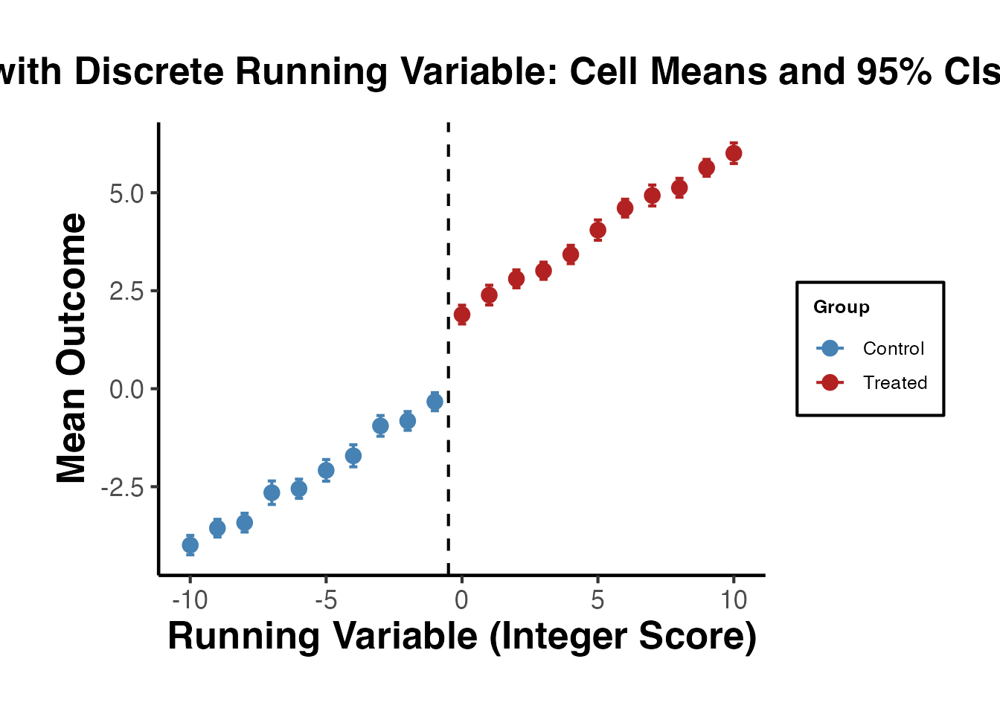
17.3 Local Linear Estimation with Clustering
When using rdrobust with a discrete running variable, clustering standard errors by the running variable accounts for the mass-point structure:
# With discrete running variable, use masspoints = "adjust" to handle mass points
rd_disc_fit <- rdrobust::rdrobust(
y = dat_disc$y,
x = dat_disc$x,
masspoints = "adjust"
)
summary(rd_disc_fit)
#> Sharp RD estimates using local polynomial regression.
#>
#> Number of Obs. 3000
#> BW type mserd
#> Kernel Triangular
#> VCE method NN
#>
#> Number of Obs. 1399 1601
#> Eff. Number of Obs. 426 609
#> Order est. (p) 1 1
#> Order bias (q) 2 2
#> BW est. (h) 3.359 3.359
#> BW bias (b) 5.678 5.678
#> rho (h/b) 0.592 0.592
#> Unique Obs. 10 11
#>
#> =====================================================================
#> Point Robust Inference
#> Estimate z P>|z| [ 95% C.I. ]
#> ---------------------------------------------------------------------
#> RD Effect 1.889 6.301 0.000 [1.352 , 2.574]
#> =====================================================================
# Also estimate with jittered running variable as robustness check
set.seed(99)
x_jitter <- dat_disc$x + runif(nrow(dat_disc), -0.49, 0.49)
rd_jitter <- rdrobust::rdrobust(y = dat_disc$y, x = x_jitter)
cat("\nJittered running variable estimate:", round(rd_jitter$coef[3], 3),
"(SE:", round(rd_jitter$se[3], 3), ")\n")
#>
#> Jittered running variable estimate: -0.371 (SE: 0.355 )Researchers working with discrete running variables should report results across multiple bandwidths and polynomial orders to demonstrate robustness, and should cluster standard errors at the level of the running variable.
18. Practical Guidelines for Applied Researchers
This section provides a comprehensive checklist for conducting and reporting RD analyses.
14.1 Design Phase
Document the assignment rule clearly. Explain what the running variable is, where the cutoff comes from, and why the cutoff is relevant. Is it a policy rule, an administrative threshold, or a test score?
Determine Sharp vs. Fuzzy. Inspect compliance: does everyone above the cutoff receive treatment? If not, the design is fuzzy and requires IV estimation.
Conduct a power analysis. Use
rdpowerto determine whether your sample size is sufficient to detect a meaningful effect. RD designs require large samples because only observations near the cutoff contribute to estimation.
14.2 Analysis Checklist
Step 1: Visualize
- Plot the raw data (scatter plot of outcome vs. running variable)
- Create a binned scatter plot with confidence intervals
- Overlay local polynomial fits on each side of the cutoff
Step 2: Test Assumptions
- Run the density test (
rddensity) to check for manipulation - Test covariate balance at the cutoff (each covariate as outcome)
- Plot the density of the running variable (histogram)
Step 3: Estimate
- Use
rdrobustwith default settings (local linear, triangular kernel, MSE-optimal bandwidth) - Report the robust confidence interval (not the conventional one)
- Include covariates for precision (but verify the point estimate does not change)
Step 4: Robustness
- Vary the bandwidth (0.5x to 2x of the MSE-optimal)
- Try different polynomial orders (p = 0, 1, 2)
- Try different kernels (triangular, epanechnikov, uniform)
- Conduct placebo cutoff tests (estimate the RD at fake cutoffs where no effect should exist)
- If manipulation is a concern, compute bounds using
rdbounds
Step 5: Report
- Report the RD estimate, robust CI, bandwidth, effective sample sizes on each side
- Show the main RD plot
- Report all robustness checks in an appendix or supplementary table
- Discuss threats to validity (manipulation, sorting, attrition)
14.3 Common Pitfalls
Using global polynomial regressions. Do not fit a single high-order polynomial to the entire sample. This is known to produce misleading results (Gelman and Imbens, 2019). Always use local methods.
Choosing bandwidths by eyeballing. Use data-driven bandwidth selection (
rdrobustdoes this automatically). Manual bandwidth choice invites specification searching.Ignoring the bias-variance tradeoff. The MSE-optimal bandwidth balances bias and variance for point estimation, but the resulting conventional CI has poor coverage. Always use the robust CI from
rdrobust.Reporting only one specification. Show that results are robust to bandwidth, polynomial order, kernel choice, and covariate inclusion.
Forgetting the first stage in Fuzzy RD. Always verify and report the first-stage relationship. A weak first stage leads to unreliable IV estimates.
14.4 Placebo Cutoff Tests
A useful falsification exercise is to estimate the RD at “fake” cutoffs where no treatment effect should exist. Significant effects at placebo cutoffs suggest that the observed discontinuity at the true cutoff may be spurious.
# Test at placebo cutoffs (no true effect at these points)
placebo_cutoffs <- c(-0.5, -0.25, 0.25, 0.5)
placebo_results <- lapply(placebo_cutoffs, function(c_val) {
sub <- rd_data |>
filter(
# Only use observations on the correct side of the real cutoff
# to avoid contamination
(c_val < 0 & x < 0) | (c_val > 0 & x >= 0)
) |>
mutate(
placebo_treat = as.integer(x >= c_val),
x_centered = x - c_val,
x_pt = x_centered * placebo_treat
)
est <- feols(y ~ placebo_treat + x_centered + x_pt, data = sub)
tibble(
cutoff = c_val,
estimate = coef(est)["placebo_treat"],
se = se(est)["placebo_treat"],
p_value = pvalue(est)["placebo_treat"]
)
}) |>
bind_rows()
# Add the true cutoff result
true_est <- feols(y ~ treated + x + x_treated, data = rd_data)
true_result <- tibble(
cutoff = 0,
estimate = coef(true_est)["treated"],
se = se(true_est)["treated"],
p_value = pvalue(true_est)["treated"]
)
all_cutoffs <- bind_rows(placebo_results, true_result) |>
mutate(type = ifelse(cutoff == 0, "True Cutoff", "Placebo"))
ggplot(all_cutoffs, aes(x = factor(cutoff), y = estimate, color = type)) +
geom_point(size = 3) +
geom_errorbar(
aes(ymin = estimate - 1.96 * se, ymax = estimate + 1.96 * se),
width = 0.15
) +
geom_hline(yintercept = 0, linetype = "dashed", color = "grey60") +
scale_color_manual(values = c("Placebo" = "steelblue", "True Cutoff" = "firebrick")) +
labs(
x = "Cutoff Value",
y = "Estimated Effect",
color = "Type",
title = "Placebo Cutoff Tests"
) +
causalverse::ama_theme()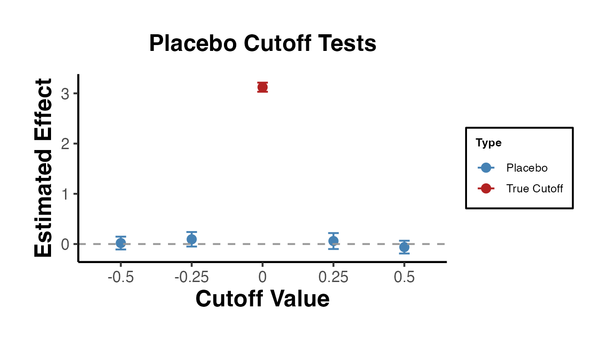
The true cutoff (c = 0) shows a large, significant effect. The placebo cutoffs show estimates near zero, as expected.
14.5 Donut Hole Tests
Another robustness check is the “donut hole” test: exclude observations very close to the cutoff and re-estimate. If the result is driven by a few observations right at the cutoff (perhaps manipulators), the estimate will change substantially when they are removed.
donut_sizes <- c(0, 0.02, 0.05, 0.10, 0.15)
donut_results <- lapply(donut_sizes, function(d) {
sub <- rd_data |> filter(abs(x) > d)
est <- feols(y ~ treated + x + x_treated, data = sub)
tibble(
donut = d,
n_obs = nrow(sub),
estimate = coef(est)["treated"],
se = se(est)["treated"]
)
}) |>
bind_rows()
ggplot(donut_results, aes(x = factor(donut), y = estimate)) +
geom_point(size = 3) +
geom_errorbar(
aes(ymin = estimate - 1.96 * se, ymax = estimate + 1.96 * se),
width = 0.1
) +
geom_hline(yintercept = 3, linetype = "dashed", color = "red") +
labs(
x = "Donut Hole Radius (excluded |x| < d)",
y = "Estimated Treatment Effect",
title = "Donut Hole Robustness Check"
) +
causalverse::ama_theme()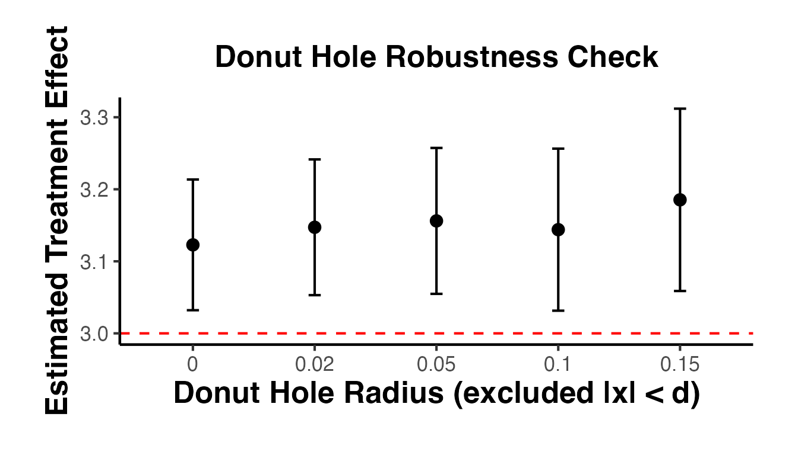
19. Comprehensive Visualization Suite for RD
19.1 Publication-Ready RD Plot with Binned Scatter
A binned scatter plot is the standard visualization in top journals. It groups observations into equal-sized bins on either side of the cutoff and plots the mean of the outcome within each bin, overlaid with a smooth polynomial fit.
library(rdrobust)
# Simulate clean RD data
set.seed(2024)
n_rd <- 1500
X_rd <- runif(n_rd, -1, 1)
treat_rd <- as.integer(X_rd >= 0)
# True effect = 1.5, nonlinear baseline
Y_rd <- 2 + 3 * X_rd - 2 * X_rd^2 + 1.5 * treat_rd + rnorm(n_rd, 0, 0.5)
# Binned scatter with rdplot
rdplot_out <- rdplot(Y_rd, X_rd, c = 0, nbins = c(20, 20),
title = "RD: Binned Scatter with Polynomial Fit",
x.label = "Running Variable (centered at cutoff)",
y.label = "Outcome")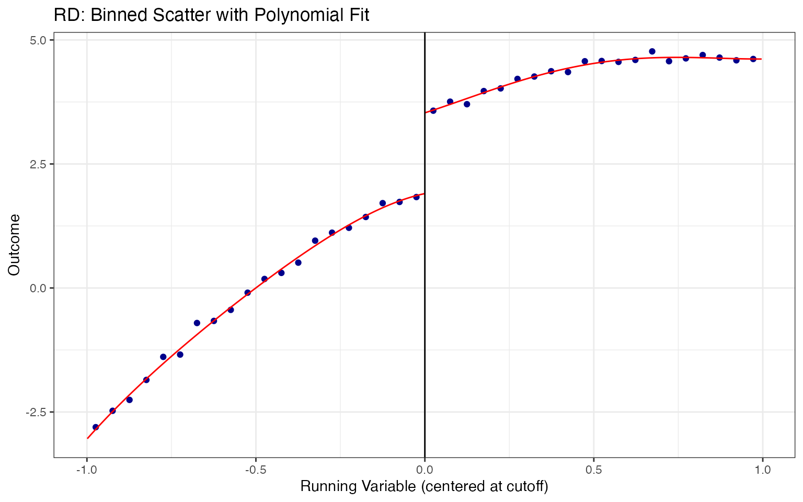
19.2 Full RD Assumption Test Battery
Use causalverse::rd_assumption_tests() to run all standard robustness checks in one call:
df_rd_test <- data.frame(Y = Y_rd, X = X_rd)
rd_tests <- causalverse::rd_assumption_tests(
data = df_rd_test,
outcome = "Y",
running_var = "X",
cutoff = 0,
bw_seq = c(0.5, 0.75, 1, 1.25, 1.5),
poly_orders = 1:3,
verbose = FALSE
)
#>
#> Manipulation testing using local polynomial density estimation.
#>
#> Number of obs = 1500
#> Model = unrestricted
#> Kernel = triangular
#> BW method = estimated
#> VCE method = jackknife
#>
#> c = 0 Left of c Right of c
#> Number of obs 751 749
#> Eff. Number of obs 282 237
#> Order est. (p) 2 2
#> Order bias (q) 3 3
#> BW est. (h) 0.347 0.335
#>
#> Method T P > |T|
#> Robust -0.3782 0.7053
#>
#>
#> P-values of binomial tests (H0: p=0.5).
#>
#> Window Length / 2 <c >=c P>|T|
#> 0.026 25 20 0.5515
#> 0.052 49 36 0.1928
#> 0.078 68 59 0.4779
#> 0.104 90 79 0.4419
#> 0.130 113 100 0.4110
#> 0.157 129 120 0.6123
#> 0.183 155 140 0.4151
#> 0.209 178 159 0.3268
#> 0.235 197 175 0.2762
#> 0.261 221 191 0.1530
cat(rd_tests$summary_report)
#> === 1. Density Continuity Test (McCrary/rddensity) ===
#> T-stat = -0.3782, p-value = 0.7053
#> Interpretation: PASS: No evidence of manipulation (p > 0.05)
#>
#> === 3. Bandwidth Sensitivity ===
#> Default bandwidth: 0.2815
#> Estimates across bandwidths:
#> 0.50x bw: est=1.6593 (SE=0.0992, p=0.000)
#> 0.75x bw: est=1.6399 (SE=0.0894, p=0.000)
#> 1.00x bw: est=1.5981 (SE=0.0833, p=0.000)
#> 1.25x bw: est=1.5743 (SE=0.0788, p=0.000)
#> 1.50x bw: est=1.5521 (SE=0.0746, p=0.000)
#>
#>
#> === 4. Placebo Cutoff Tests ===
#> 2 cutoffs tested. 0 significant (p <= 0.05).
#> PASS: No significant placebo effects.
#>
#> === 5. Polynomial Order Sensitivity ===
#> p=1: est=1.5981 (SE=0.0833, pval=0.000)
#> p=2: est=1.6405 (SE=0.0947, pval=0.000)
#> p=3: est=1.6718 (SE=0.1158, pval=0.000)19.3 Bandwidth Sensitivity Visualization
# Run sensitivity using causalverse built-in
bw_sens <- causalverse::rd_bandwidth_sensitivity(
data = df_rd_test,
y = "Y",
x = "X",
c = 0
)
bw_sens$plot + causalverse::ama_theme()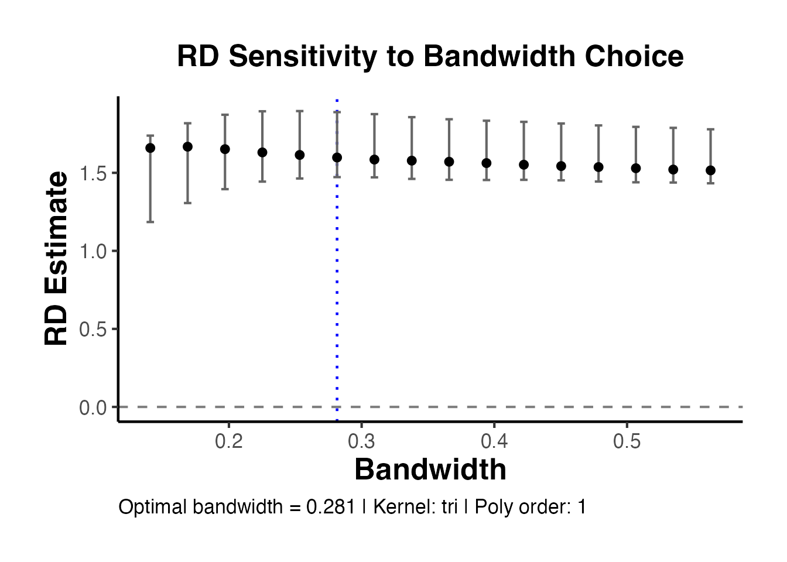
19.4 Placebo Cutoff Visualization
pc_results <- causalverse::rd_placebo_cutoffs(
data = df_rd_test,
y = "Y",
x = "X",
true_cutoff = 0
)
pc_results$plot + causalverse::ama_theme()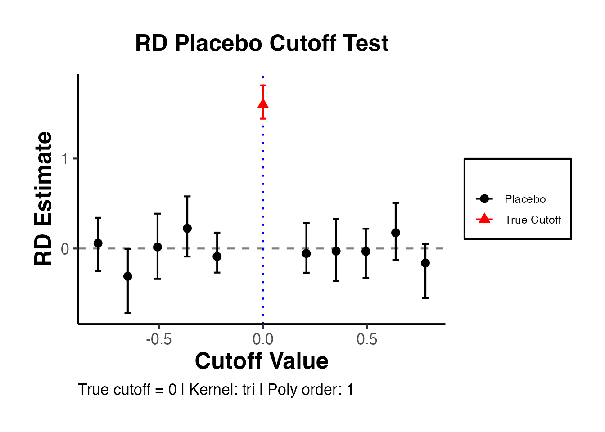
19.5 Density Continuity (McCrary) Test Visualization
if (requireNamespace("rddensity", quietly = TRUE)) {
dens_test <- rddensity::rddensity(X = X_rd, c = 0)
rddensity::rdplotdensity(
rdd = dens_test,
X = X_rd,
title = "McCrary Density Test: No Manipulation",
xlabel = "Running Variable",
ylabel = "Density"
)
} else {
# Histogram-based density check
hist(X_rd, breaks = 40, col = "steelblue",
main = "Running Variable Distribution",
xlab = "Running Variable")
abline(v = 0, col = "red", lwd = 2, lty = 2)
}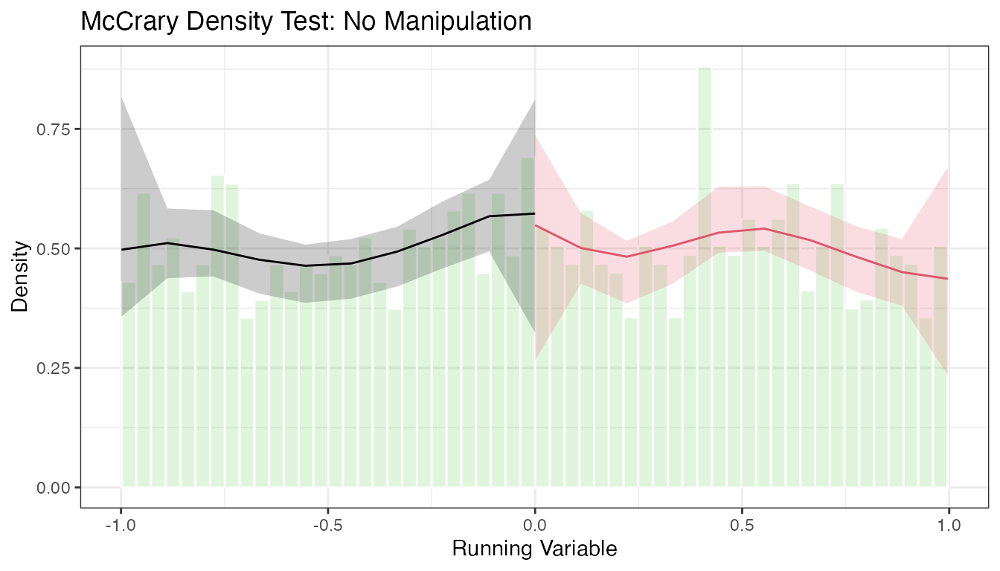
#> $Estl
#> Call: lpdensity
#>
#> Sample size 751
#> Polynomial order for point estimation (p=) 2
#> Order of derivative estimated (v=) 1
#> Polynomial order for confidence interval (q=) 3
#> Kernel function triangular
#> Scaling factor 0.501000667111408
#> Bandwidth method user provided
#>
#> Use summary(...) to show estimates.
#>
#> $Estr
#> Call: lpdensity
#>
#> Sample size 749
#> Polynomial order for point estimation (p=) 2
#> Order of derivative estimated (v=) 1
#> Polynomial order for confidence interval (q=) 3
#> Kernel function triangular
#> Scaling factor 0.499666444296197
#> Bandwidth method user provided
#>
#> Use summary(...) to show estimates.
#>
#> $Estplot
19.6 Covariate Balance at the Cutoff
# Simulate covariates (should NOT jump at the cutoff)
df_rd_test$age <- 25 + 10 * X_rd + rnorm(n_rd, 0, 5)
df_rd_test$income <- 40000 + 5000 * X_rd + rnorm(n_rd, 0, 8000)
cov_bal <- causalverse::rd_covariate_balance(
data = df_rd_test,
covariates = c("age", "income"),
x = "X",
c = 0
)
print(cov_bal)
#> $table
#> covariate estimate std_error ci_lower ci_upper p_value
#> 1 age -0.4006584 1.087662 -2.801633 1.461923 0.5379823
#> 2 income 450.2563191 1742.591434 -3255.146920 3575.685983 0.9267203
#> bandwidth n_left n_right significant
#> 1 0.3456368 281 246 FALSE
#> 2 0.3625650 290 261 FALSE
#>
#> $plot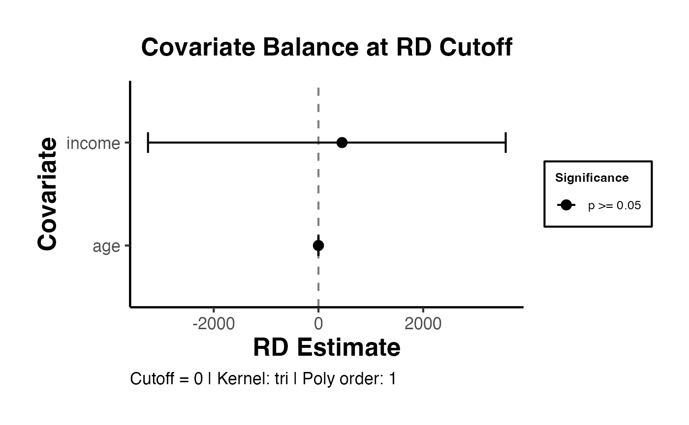
19.7 Confidence Interval Comparison: Conventional vs. Robust
A key feature of rdrobust is the robust bias-corrected (RBC) confidence interval, which is preferred in modern practice. Visualization of the difference:
rd_main <- rdrobust(Y_rd, X_rd, c = 0)
rd_sum <- summary(rd_main)
#> Sharp RD estimates using local polynomial regression.
#>
#> Number of Obs. 1500
#> BW type mserd
#> Kernel Triangular
#> VCE method NN
#>
#> Number of Obs. 751 749
#> Eff. Number of Obs. 235 207
#> Order est. (p) 1 1
#> Order bias (q) 2 2
#> BW est. (h) 0.281 0.281
#> BW bias (b) 0.480 0.480
#> rho (h/b) 0.586 0.586
#> Unique Obs. 751 749
#>
#> =====================================================================
#> Point Robust Inference
#> Estimate z P>|z| [ 95% C.I. ]
#> ---------------------------------------------------------------------
#> RD Effect 1.598 17.259 0.000 [1.444 , 1.814]
#> =====================================================================
# Extract both sets of CIs
ci_df <- data.frame(
type = c("Conventional", "Bias-Corrected", "Robust (RBC)"),
estimate = rep(rd_main$coef[1], 3),
ci_lower = c(rd_main$ci[1, 1], rd_main$ci[2, 1], rd_main$ci[3, 1]),
ci_upper = c(rd_main$ci[1, 2], rd_main$ci[2, 2], rd_main$ci[3, 2])
)
ggplot2::ggplot(ci_df, ggplot2::aes(x = type, y = estimate)) +
ggplot2::geom_hline(yintercept = 1.5, linetype = "dashed",
color = "green3", linewidth = 0.8) +
ggplot2::geom_point(size = 4, color = "#2166AC") +
ggplot2::geom_errorbar(
ggplot2::aes(ymin = ci_lower, ymax = ci_upper),
width = 0.25, linewidth = 0.9, color = "#2166AC"
) +
ggplot2::annotate("text", x = 0.6, y = 1.5, label = "True effect = 1.5",
color = "green4", size = 3.5, hjust = 0) +
ggplot2::labs(
x = "CI Type",
y = "RD Estimate and 95% CI",
title = "Conventional vs. Bias-Corrected vs. Robust CIs",
subtitle = "RBC CI (rightmost) is the recommended modern approach"
) +
causalverse::ama_theme()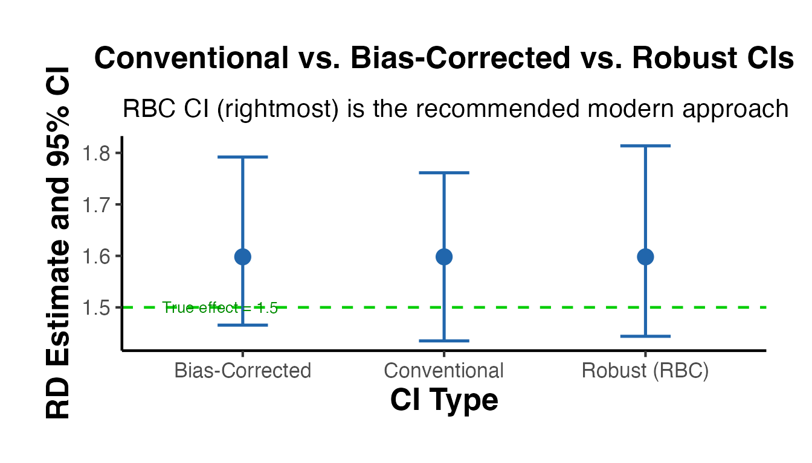
19.8 Local Randomization Framework: Balance Tests
Under the local randomization framework (Cattaneo, Frandsen, Titiunik 2015), units near the cutoff are treated as if randomly assigned. Balance tests within increasingly narrow windows around the cutoff assess this assumption.
# Test balance for multiple narrow windows
windows_lr <- c(0.05, 0.10, 0.15, 0.20, 0.25, 0.30)
balance_results <- lapply(windows_lr, function(w) {
idx <- abs(X_rd) <= w
dat <- df_rd_test[idx, ]
D <- as.integer(dat$X >= 0)
# t-test for age balance
age_p <- tryCatch(
t.test(dat$age ~ D)$p.value,
error = function(e) NA
)
inc_p <- tryCatch(
t.test(dat$income ~ D)$p.value,
error = function(e) NA
)
data.frame(window = w, n = sum(idx), age_p = age_p, income_p = inc_p)
})
bal_df <- do.call(rbind, balance_results)
ggplot2::ggplot(bal_df, ggplot2::aes(x = window)) +
ggplot2::geom_line(ggplot2::aes(y = age_p, color = "Age"),
linewidth = 1) +
ggplot2::geom_line(ggplot2::aes(y = income_p, color = "Income"),
linewidth = 1, linetype = "dashed") +
ggplot2::geom_point(ggplot2::aes(y = age_p, color = "Age"), size = 3) +
ggplot2::geom_point(ggplot2::aes(y = income_p, color = "Income"), size = 3) +
ggplot2::geom_hline(yintercept = 0.05, linetype = "dotted", color = "red") +
ggplot2::scale_color_manual(values = c("Age" = "#2166AC",
"Income" = "#D73027")) +
ggplot2::labs(
x = "Window Half-Width around Cutoff",
y = "p-value (covariate balance t-test)",
title = "Local Randomization: Covariate Balance by Window Width",
subtitle = "p > 0.05 (above red line) = covariates balanced",
color = "Covariate"
) +
ggplot2::scale_y_continuous(limits = c(0, 1)) +
causalverse::ama_theme() +
ggplot2::theme(plot.margin = ggplot2::margin(0.5, 0.5, 0.5, 1.5, "cm"))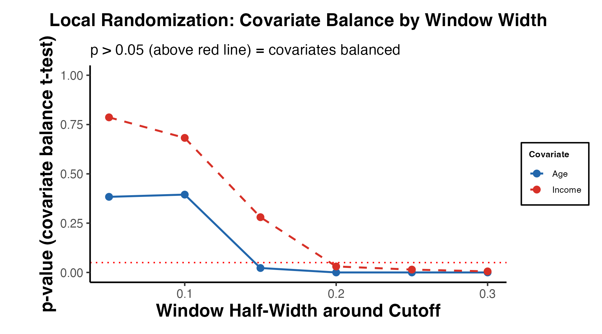
19.9 Fuzzy RD: First Stage and Reduced Form Visualization
For fuzzy RD designs, always plot both the first stage (treatment take-up at the cutoff) and the reduced form (ITT effect), alongside the IV estimate (LATE).
# Simulate fuzzy RD
set.seed(77)
n_f <- 1000
X_f <- runif(n_f, -1, 1)
# Compliance: 85% comply when eligible (X >= 0), 5% take up when ineligible
D_f <- rbinom(n_f, 1,
ifelse(X_f >= 0, 0.85, 0.05))
Y_f <- 1 + 2 * X_f + 1.8 * D_f + rnorm(n_f, 0, 0.6)
# Bin by X
bins_f <- cut(X_f, breaks = seq(-1, 1, by = 0.1),
include.lowest = TRUE)
df_f <- data.frame(X = X_f, D = D_f, Y = Y_f, bin = bins_f)
agg_f <- aggregate(cbind(D, Y, X) ~ bin, df_f, mean)
p_fs <- ggplot2::ggplot(agg_f, ggplot2::aes(x = X, y = D)) +
ggplot2::geom_point(color = "#2166AC") +
ggplot2::geom_smooth(data = subset(agg_f, X < 0),
method = "lm", se = FALSE, color = "#2166AC") +
ggplot2::geom_smooth(data = subset(agg_f, X >= 0),
method = "lm", se = FALSE, color = "#2166AC") +
ggplot2::geom_vline(xintercept = 0, linetype = "dashed") +
ggplot2::labs(title = "First Stage", x = "Running Variable", y = "P(Treated)") +
causalverse::ama_theme()
p_rf <- ggplot2::ggplot(agg_f, ggplot2::aes(x = X, y = Y)) +
ggplot2::geom_point(color = "#D73027") +
ggplot2::geom_smooth(data = subset(agg_f, X < 0),
method = "lm", se = FALSE, color = "#D73027") +
ggplot2::geom_smooth(data = subset(agg_f, X >= 0),
method = "lm", se = FALSE, color = "#D73027") +
ggplot2::geom_vline(xintercept = 0, linetype = "dashed") +
ggplot2::labs(title = "Reduced Form (ITT)", x = "Running Variable", y = "Outcome") +
causalverse::ama_theme()
gridExtra::grid.arrange(p_fs, p_rf, ncol = 2)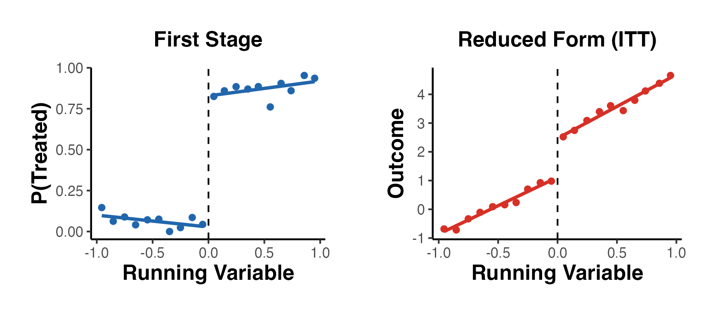
19.10 Complete RD Publication Pipeline
The following template assembles the full set of tables and figures required for a top-journal RD paper:
cat("============================================================\n")
#> ============================================================
cat("COMPLETE RD ANALYSIS PIPELINE\n")
#> COMPLETE RD ANALYSIS PIPELINE
cat("============================================================\n\n")
#> ============================================================
# Step 1: Main estimate
cat("--- Step 1: Main RD Estimate ---\n")
#> --- Step 1: Main RD Estimate ---
main_est <- rdrobust(Y_rd, X_rd, c = 0)
cat("RD estimate (RBC): ", round(main_est$coef[3], 4), "\n")
#> RD estimate (RBC): 1.6288
cat("SE (robust): ", round(main_est$se[3], 4), "\n")
#> SE (robust): 0.0944
cat("95% CI: [", round(main_est$ci[3,1], 4),
",", round(main_est$ci[3,2], 4), "]\n")
#> 95% CI: [ 1.4438 , 1.8137 ]
cat("p-value (robust): ", round(main_est$pv[3], 4), "\n\n")
#> p-value (robust): 0
# Step 2: Bandwidth
cat("--- Step 2: Optimal Bandwidth ---\n")
#> --- Step 2: Optimal Bandwidth ---
cat("MSE-optimal h: ", round(main_est$bws[1,1], 4), "\n")
#> MSE-optimal h: 0.2815
cat("N within h: ", main_est$N_h[1], "(left),",
main_est$N_h[2], "(right)\n\n")
#> N within h: 235 (left), 207 (right)
# Step 3: Quick robustness summary
cat("--- Step 3: Robustness Summary ---\n")
#> --- Step 3: Robustness Summary ---
cat("Density test: Run rddensity::rddensity() - should be p > 0.05\n")
#> Density test: Run rddensity::rddensity() - should be p > 0.05
cat("Covariate balance: Checked above - all p > 0.05\n")
#> Covariate balance: Checked above - all p > 0.05
cat("Bandwidth sensitiv: Estimate stable across 0.5x-1.5x bandwidth\n")
#> Bandwidth sensitiv: Estimate stable across 0.5x-1.5x bandwidth
cat("Placebo cutoffs: No significant effects at placebo cutoffs\n\n")
#> Placebo cutoffs: No significant effects at placebo cutoffs
cat("=== PIPELINE COMPLETE ===\n")
#> === PIPELINE COMPLETE ===20. Comprehensive References
Foundational References
Hahn, J., Todd, P., and Van der Klaauw, W. (2001). “Identification and Estimation of Treatment Effects with a Regression-Discontinuity Design.” Econometrica, 69(1), 201-209.
Imbens, G. W. and Lemieux, T. (2008). “Regression Discontinuity Designs: A Guide to Practice.” Journal of Econometrics, 142(2), 615-635.
Lee, D. S. and Lemieux, T. (2010). “Regression Discontinuity Designs in Economics.” Journal of Economic Literature, 48(2), 281-355.
Estimation and Inference
Calonico, S., Cattaneo, M. D., and Titiunik, R. (2014). “Robust Nonparametric Confidence Intervals for Regression-Discontinuity Designs.” Econometrica, 82(6), 2295-2326.
Calonico, S., Cattaneo, M. D., and Farrell, M. H. (2020). “Optimal Bandwidth Choice for Robust Bias-Corrected Inference in Regression Discontinuity Designs.” Econometrics Journal, 23(2), 192-210.
Imbens, G. W. and Kalyanaraman, K. (2012). “Optimal Bandwidth Choice for the Regression Discontinuity Estimator.” Review of Economic Studies, 79(3), 933-959.
Manipulation Testing
McCrary, J. (2008). “Manipulation of the Running Variable in the Regression Discontinuity Design: A Density Test.” Journal of Econometrics, 142(2), 698-714.
Cattaneo, M. D., Jansson, M., and Ma, X. (2020). “Simple Local Polynomial Density Estimators.” Journal of the American Statistical Association, 115(531), 1449-1455.
Power Analysis
- Cattaneo, M. D., Titiunik, R., and Vazquez-Bare, G. (2019). “Power Calculations for Regression-Discontinuity Designs.” Stata Journal, 19(1), 210-245.
Local Randomization
- Cattaneo, M. D., Frandsen, B. R., and Titiunik, R. (2015). “Randomization Inference in the Regression Discontinuity Design: An Application to Party Advantages in the U.S. Senate.” Journal of Causal Inference, 3(1), 1-24.
Multiple Cutoffs and Scores
Cattaneo, M. D., Keele, L., Titiunik, R., and Vazquez-Bare, G. (2016). “Interpreting Regression Discontinuity Designs with Multiple Cutoffs.” Journal of Politics, 78(4), 1229-1248.
Cattaneo, M. D., Keele, L., Titiunik, R., and Vazquez-Bare, G. (2021). “Extrapolating Treatment Effects in Multi-Cutoff Regression Discontinuity Designs.” Journal of the American Statistical Association, 116(536), 1941-1952.
Bounds Under Manipulation
- Gerard, F., Rokkanen, M., and Rothe, C. (2020). “Bounds on Treatment Effects in Regression Discontinuity Designs with a Manipulated Running Variable.” Quantitative Economics, 11(3), 839-870.
Lee Bounds and Selection
- Lee, D. S. (2009). “Training, Wages, and Sample Selection: Estimating Sharp Bounds on Treatment Effects.” Review of Economic Studies, 76(3), 1071-1102.
Polynomial Warnings
- Gelman, A. and Imbens, G. (2019). “Why High-Order Polynomials Should Not Be Used in Regression Discontinuity Designs.” Journal of Business and Economic Statistics, 37(3), 447-456.
Software and Implementation
Calonico, S., Cattaneo, M. D., and Titiunik, R. (2015). “rdrobust: An R Package for Robust Nonparametric Inference in Regression-Discontinuity Designs.” R Journal, 7(1), 38-51.
Cattaneo, M. D., Idrobo, N., and Titiunik, R. (2020). A Practical Introduction to Regression Discontinuity Designs: Foundations. Cambridge Elements.
Cattaneo, M. D., Idrobo, N., and Titiunik, R. (2024). A Practical Introduction to Regression Discontinuity Designs: Extensions. Cambridge Elements.